5Advanced Tuning Methods and Black Box Optimization
Marc Becker Ludwig-Maximilians-Universität München
Lennart Schneider Ludwig-Maximilians-Universität München, and Munich Center for Machine Learning (MCML)
Having looked at the basic usage of mlr3tuning, we will now turn to more advanced methods. We will begin in sec-tuning-errors by continuing to look at single-objective tuning but will consider what happens when experiments go wrong and how to prevent fatal errors. We will then extend the methodology from sec-optimization to enable multi-objective tuning, where learners are optimized to multiple measures simultaneously, in sec-multi-metrics-tuning we will consider important theory behind this and demonstrate how this is handled relatively simply in mlr3 by making use of the same classes and methods we have already used. The final two sections focus on specific optimization methods. sec-hyperband looks in detail at multi-fidelity tuning and the Hyperband tuner, consider some theory behind this method and them demonstrating it in practice with mlr3hyperband. Finally, sec-bayesian-optimization takes a deep dive into black box Bayesian Optimization. This is a more theory-heavy chapter to motivate the design of the classes and methods in mlr3mbo.
This section covers advanced ML or technical details that can be skipped.
5.1 Error handling and memory management
In this section we will look at how to use mlr3 to ensure that tuning workflows are efficient and robust. In particular, we will consider how to enable features that prevent fatal errors leading to irrecoverable data loss in the middle of an experiment, and then how to manage tuning experiments that may use up a lot of computer memory.
5.1.1 Encapsulation and Fallback Learner
Error handling is discussed in detail in sec-error-handling, however it is very important in the context of tuning so here we will just practically demonstrate how to make use of encapsulation and fallback learners and explain why they are essential during HPO.
Even in simple ML problems, there is a lot of potential for things to go wrong. For example when learners do not converge, run out of memory, or terminate with an error due to issues in the underlying data or bugs in the code. As a common example, learners can fail if there are factor levels present in the test data that were not in the training data, models fail in this case as there have been no weights/coefficients trained for these new factor levels:
Error in model.frame.default(Terms, newdata, na.action = na.action, xlev = object$xlevels): factor town has new levels Millis, Sherborn
In the above example, we can see the tuning process breaks and we lose all information about the HPO process as the instance cannot be saved. This is even worse in nested resampling or benchmarking, when errors could cause us to lose all progress across multiple configurations or even learners and tasks.
Encapsulation (sec-encapsulation) allows errors to be isolated and handled, without disrupting the tuning process. We can tell a learner to encapsulate an error by setting the $encapsulate field as follows:
Note by passing "evaluate" to both train and predict, we are telling the learner to setup encapsulation in both the training and predicting stages, however we could have only set it for one stage.
Another common issue that cannot be easily solved during HPO is learners not converging and the process running indefinitely. We can prevent this happening by setting the timeout field in a learner, which signals the learner to stop if it has been running for that much time, again this can be set for training and predicting individually:
Now if either an error occurs, or the model timeout threshold is reached, then instead of breaking, the learner will simply not make predictions when errors are found. Unfortunately, if predictions are not made, then our HPO experimement will still fail as for any resampling iteration with errors, the result will be NA, and so are unable to aggregate results across resampling iterations. Therefore it is essential to also select a fallback learner (sec-fallback), which is essentiall a learner that will be fitted if the learner of interest fails. A common approach is to use a featureless baseline, classif/regr.featureless. Below we set regr.featureless, which always predicts the mean response, by passing this learner to the $fallback field.
learner$fallback=lrn("regr.featureless")
We can now run our experiment and see errors that occurred during tuning in the archive.
# Reading the error in the first resample resultinstance$archive$resample_result(1)$errors
iteration msg
1: 3 factor town has new levels Topsfield
2: 4 factor town has new levels Lincoln, Millis, Sherborn
3: 5 factor town has new levels Hanover, Medfield, Wenham
4: 6 factor town has new levels Cohasset, Duxbury, Hull, Norwell
5: 7 factor town has new levels Nahant
6: 8 factor town has new levels Hamilton, Norfolk
7: 9 factor town has new levels Dover, Manchester
8: 10 factor town has new levels Middleton
The learner was tuned without breaking because the errors were encapsulated and logged before the fallback learners were used for fitting and predicting:
Running a large tuning experiment requires a lot of working memory, especially when using nested resampling. Most of the memory is consumed by the models since each resampling iteration creates one new model. The option store_models in the functions ti() and auto_tuner() allows us to enable the storage of the models. Storing the models is disabled by default and in most cases is not required.
The archive stores a ResampleResult for each evaluated hyperparameter configuration. The contained Prediction objects can take up a lot of memory, especially with large datasets and many resampling iterations. We can disable the storage of the resample results by setting store_benchmark_result = FALSE in the functions ti() and auto_tuner(). Note that without the resample results, it is no longer possible to score the configurations on another measure.
The option store_models = TRUE sets store_benchmark_result and store_tuning_instance to TRUE because the models are stored in the benchmark results which in turn is part of the instance. This also means that store_benchmark_result = TRUE sets store_tuning_instance to TRUE.
Finally, we can set store_models = FALSE in the resample() or benchmark() functions to disable the storage of the auto tuners when running nested resampling. This way we can still access the aggregated performance (rr$aggregate()) but lose information about the inner resampling.
5.2 Multi-Objective Tuning
So far we have considered optimizing a model with respect to one metric, but multi-criteria, or multi-objective optimization, is also possible. A simple example of multi-objective optimization might be optimizing a classifier to minimize false positive and false negative predictions. In another example, consider the single-objective problem of tuning a deep neural network to minimize classification error. The best performing model is likely to be quite complex, possibly with many layers that will take a long time to train, which would not be appropriate when you have limited resources. In this case we might want to simultaneously minimize the classification error and model complexity.
Multi-objective
By definition, optimization of multiple metrics means these will be in competition (otherwise we would only optimize one of them) and therefore in general no single configuration exists that optimizes all metrics. We therefore instead focus on the concept of Pareto optimality. One hyperparameter configuration is said to Pareto-dominate another if the resulting model is equal or better in all metrics and strictly better in at least one metric. For example say we are minimizing classification error, CE, and complexity, CP, for configurations A and B with CE of \(CE_A\) and \(CE_B\) respectively and CP of \(CP_A\) and \(CP_B\) respectively. Then, A pareto-dominates B if: 1) \(CE_A \leq CE_B\) and \(CP_A < CP_B\) or; 2) \(CE_A < CE_B\) and \(CP_A \leq CP_B\). All configurations that are not Pareto-dominated by any other configuration are called Pareto-efficient and the set of all these configurations is the Pareto set. The metric values corresponding to these Pareto set are referred to as the Pareto front.
Pareto SetPareto Front
The goal of multi-objective HPO is to approximate the Pareto front. We will now demonstrate multi-objective HPO by tuning a decision tree on the sonar dataset with respect to the classification error, as a measure of model performance, and the number of selected features, as a measure of model complexity (in a decision tree the number of selected features is straightforward to obtain by simply counting the number of unique splitting variables). Methodological details on multi-objective HPO can be found in Karl et al. (2022).
Note that as we tune with respect to multiple measures, the function ti creates a TuningInstanceMultiCrit instead of a TuningInstanceSingleCrit. We also have to set store_models = TRUE as this is required by the selected features measure.
Finally, we inspect the best-performing configurations, i.e., the Pareto set, and visualize the corresponding estimated Pareto front (Figure fig-pareto).
Figure 5.1: Pareto front of selected features and classification error. Purple dots represent tested configurations, each blue dot individually represents a Pareto-optimal configuration and all blue dots together represent the Pareto front.
Determining which configuration to use from the Pareto front is up to you. By definition there is no optimal configuration so this may depend on your use-case, for example if you would prefer lower complexity at the cost of higher error than you might prefer a configuration where selected_features = 1. You can select one configuration and pass it to a learner for training using $result_learner_param_vals, so if we want to select the second configuration we would run:
As multi-objective tuning requires manual intervention to select a configuration, it is currently not possible to use auto_tuner. Furthermore, it can also be quite difficult to compare multiple models over multiple measures.
5.3 Multi-Fidelity Tuning via Hyperband
Increasingly large datasets and search spaces and costly to train models make hyperparameter optimization a time-consuming task. Recent HPO methods often also make use of evaluating a configuration at multiple fidelity levels. For example, a neural network can be trained for an increasing number of epochs, gradient boosting can be performed for an increasing number of boosting iterations and training data can always be subsampled to a smaller fraction of all available data. The general idea of multi-fidelity HPO is that the performance of a model obtained by using computationally cheap lower fidelity evaluation (few numbers of epochs or boosting iterations, only using a small sample of all available data for training) is predictive of the performance of the model obtained using computationally expensive full model evaluation and this concept can be leveraged to make HPO more efficient (e.g., only continuing to evaluate those configurations on higher fidelities that appear to be promising with respect to their performance). The fidelity parameter is part of the search space and controls the trade-off between the runtime and preciseness of the performance approximation.
A popular multi-fidelity HPO algorithm is Hyperband(Li et al. 2018). After having evaluated randomly sampled configurations on low fidelities, Hyperband iteratively allocates more resources to promising configurations and terminates low-performing ones. In the following example, we will optimize XGBoost and use the number of boosting iterations as the fidelity parameter. This means Hyperband will allocate increasingly more boosting iterations to well-performing hyperparameter configurations. Increasing the number of boosting iterations increases the time to train a model but generally also the performance. It is therefore a suitable fidelity parameter. However, as already mentioned, Hyperband is not limited to machine learning algorithms that are trained iteratively. In the second example, we will tune a support vector machine and use the size of the training data as the fidelity parameter. Some prior knowledge about pipelines (sec-pipelines) is beneficial but not necessary to fully understand the examples. In the following, the terms fidelity and budget are often used interchangeably.
5.3.1 Hyperband Tuner
Hyperband (Li et al. 2018) builds upon the Successive Halving algorithm by Jamieson and Talwalkar (2016). Successive Halving is initialized with the number of starting configurations \(n\), the proportion of configurations discarded in each stage \(\eta\), and the minimum \(r{_{min}}\) and maximum \(r{_{max}}\) budget of a single evaluation. The algorithm starts by sampling \(n\) random configurations and allocating the minimum budget \(r{_{min}}\) to them. The configurations are evaluated and \(\frac{1}{\eta}\) of the worst-performing configurations are discarded. The remaining configurations are promoted to the next stage and evaluated on a larger budget. This continues until one or more configurations are evaluated on the maximum budget \(r{_{max}}\) and the best-performing configuration is selected. The total number of stages is calculated so that each stage consumes approximately the same overall budget. Successive Halving has the disadvantage that is not clear whether we should choose a large \(n\) and try many configurations on a small budget or choose a small \(n\) and train more configurations on the full budget.
Hyperband solves this problem by running Successive Halving with different numbers of stating configurations starting on different budget levels. The algorithm is initialized with the same parameters as Successive Halving except for \(n\). Each run of Successive Halving is called a bracket and starts with a different budget \(r{_{0}}\). A smaller starting budget means that more configurations can be evaluated. The most exploratory bracket is allocated the minimum budget \(r{_{min}}\). The next bracket increases the starting budget by a factor of \(\eta\). In each bracket, the starting budget increases further until the last bracket \(s = 0\) essentially performs a random search with the full budget \(r{_{max}}\). The number of brackets \(s{_{max}} + 1\) is calculated with \(s{_{max}} = {\log_\eta \frac{r{_{max}} }{r{_{min}}}}\). Under the condition that \(r{_{0}}\) increases by \(\eta\) with each bracket, \(r{_{min}}\) sometimes has to be adjusted slightly in order not to use more than \(r{_{max}}\) resources in the last bracket. The number of configurations in the base stages is calculated so that each bracket uses approximately the same amount of budget. Table tbl-hyperband shows a full run of the Hyperband algorithm. The bracket \(s = 3\) is the most exploratory bracket and \(s = 0\) essentially performs a random search using the full budget.
Table 5.1: Hyperband schedule with the number of configurations \(n_{i}\) and resources \(r_{i}\) for each bracket \(s\) and stage \(i\), when \(\eta = 2\) , \(r{_{min}} = 1\) and \(r{_{max}} = 8\)
\(s = 3\)
\(s = 2\)
\(s = 1\)
\(s = 0\)
\(i\)
\(n_{i}\)
\(r_{i}\)
\(n_{i}\)
\(r_{i}\)
\(n_{i}\)
\(r_{i}\)
\(n_{i}\)
\(r_{i}\)
0
8
1
6
2
4
4
4
8
1
4
2
3
4
2
8
2
2
4
1
8
3
1
8
5.3.2 Example XGBoost
In this practical example, we will optimize the hyperparameters of XGBoost on the spam dataset. We begin by constructing the learner.
As the next step we define the search space. The nrounds parameter controls the number of boosting iterations. We specify a range from 16 to 128 boosting iterations. This is used as \(r{_{min}}\) and \(r{_{max}}\) within Hyperband. We need to tag the parameter with "budget"to identify it as a fidelity parameter. For the other hyperparameters, we take the search space for XGBoost from Bischl et al. (2023). This search space usually work well for a wide range of datasets.
We then construct the Hyperband tuner and specify eta = 2. In general, Hyperband can start all over from the beginning once the last bracket is evaluated. We control the number of Hyperband runs with the repetition argument. The setting repetition = Inf is useful when a terminator should stop the optimization, for example based on runtime.
Using eta = 2 and 16 to 128 boosting iterations results in the following schedule. This only prints a data table with the schedule and does not modify the tuner.
In this example, we will optimize the hyperparameters of a support vector machine on the sonar dataset. We begin by constructing the learner and setting type to "C-classification".
learner=lrn("classif.svm", id ="svm", type ="C-classification")
The mlr3pipelines package features a PipeOp for subsampling data. This will be helpful when using the size of the training data as a fidelity parameter.
This pipeline operator controls the size of the training dataset with the frac parameter. We connect the po("subsample") with the learner and get a GraphLearner.
The graph learner subsamples and then fits a support vector machine on the data subset. The parameter set of the graph learner is a combination of the parameter sets of the pipeline operator and learner.
id lower upper levels
1: subsample.frac 0 Inf
2: subsample.stratify NA NA TRUE,FALSE
3: subsample.replace NA NA TRUE,FALSE
4: svm.cachesize -Inf Inf
5: svm.class.weights NA NA
---
15: svm.nu -Inf Inf
16: svm.scale NA NA
17: svm.shrinking NA NA TRUE,FALSE
18: svm.tolerance 0 Inf
19: svm.type NA NA C-classification,nu-classification
Next, we create the search space. We have to prefix the hyperparameters with the id of the pipeline operators, because this reflects the way how they are represented in the parameter set of the graph learner. The subsample.frac is the fidelity parameter that must be tagged with "budget" in the search space. In the following, the dataset size is increased from 3.7% to 100%. For the other hyperparameters, we take the search space for support vector machines from Binder, Pfisterer, and Bischl (2020). This search space usually work well for a wide range of datasets.
Support vector machines can often crash during training or take an extensive time to train given certain hyperparameters. We therefore set a timeout of 30 seconds and specify a fallback learner (sec-encapsulation-fallback) to handle these cases.
classif.ce subsample.frac svm.kernel
1: 0.2357488 1 linear
The archive contains all evaluated configurations. We can proceed to further investigate the 8 configurations that were evaluated on the full dataset. The configuration with the best classification error on the full dataset was sampled in the second bracket. The classification error was estimated to be 30% on 33% of the dataset and decreased to 14% on the full dataset (see bright purple line in Figure fig-hyperband).
Figure 5.2: Optimization paths of the 8 configurations evaluated on the complete dataset.
5.4 Bayesian Optimization
In hyperparameter optimization (HPO, see sec-optimization), we configure a learner with a hyperparameter configuration and evaluate the learner on a given task via a resampling technique to estimate its generalization performance with the goal to find the optimal hyperparameter configuration. In general, no analytical description for this mapping from a hyperparameter configuration to performance exists and gradient information is also not available. HPO is therefore a prime example for black-box optimization which considers the optimization of a function whose structure and analytical description is unknown, unexploitable or non-existent. As a result, the only observable information is the output value (e.g., generalization performance) of the function given an input value (e.g., hyperparameter configuration). Besides, evaluating the performance of a learner can take a substantial amount of time, making HPO an expensive black-box optimization problem. Other examples for black-box optimization problems are real-life experiments, e.g., crash tests or chemical reactions, or expensive computer simulations of such processes.
Black-Box Optimization
Many optimization algorithm classes exist that can be used for black-box optimization that differ in how they tackle this problem. In sec-optimization, we showed how to use a grid or random search to find the optimal hyperparameter configuration of a learner for a given task. However, more sophisticated black-box optimizers such as evolutionary strategies or Bayesian optimization allow for finding much better performing configurations much more efficiently. This chapter is therefore of interest to users concerned with sample efficient black-box optimization and HPO.
In general, most black-box optimizers work iteratively, i.e., they sequentially propose new points for evaluation by making use of the information collected during the evaluation of previous points. Evolutionary strategies for example maintain a so-called population and generate new points for evaluation by choosing parents from that population and performing recombination operators such as mutation and crossover to generate the offspring of the next generation. In general, evolutionary strategies are very suited for black-box optimization, however, if the cost of the evaluation of the black-box function becomes large (e.g., as in HPO), sample efficiency of an optimizer becomes highly relevant.
Bayesian optimization (BO) – sometimes also called Model Based Optimization (MBO) – refers to a class of sample-efficient iterative global black-box optimization algorithms that rely on a surrogate model trained on observed data to model the black-box function. This surrogate model is typically a non-linear regression model that tries to capture the unknown function using limited observed data. During each iteration, BO algorithms employ an acquisition function to determine the next candidate point for evaluation. This function measures the expected ‘utility’ of each point within the search space based on the prediction of the surrogate model. The algorithm then selects the candidate point with the best acquisition function value, and evaluates the black-box function at that point to then update the surrogate model. This iterative process continues until a termination criterion is met, such as reaching a pre-specified maximum number of evaluations or achieving a desired level of performance. Often, using BO results in very good optimization performance, especially if the cost of the black-box evaluation becomes expensive and optimization budget is tight.
In the following, we will give a brief general introduction to black-box optimization making use of the bbotk package. We then introduce the building blocks of BO algorithms and examine their interplay and interaction during the optimization process before we assemble these building blocks in a ready to use black-box optimizer, illustrating how BO can be performed within the mlr3 ecosystem making use of the mlr3mbo package. Readers who are primarily interested in how to utilize BO for hyperparameter optimization without delving deep into the underlying building blocks can directly proceed to sec-bayesian-tuning. Detailed introductions to black-box optimization and BO are given in Bischl et al. (2023), Feurer and Hutter (2019) and Garnett (2022).
5.4.0.1 Black-Box Optimization
The bbotk (black-box optimization toolkit) package is the workhorse package for general black-box optimization within the mlr3 ecosystem. At the heart of the package are the R6 classes:
Throughout this chapter, our running example will be to optimize the following sinusoidal function (Figure fig-bayesian-optimization-sinusoidal), which is characterized by two local minima and one global minimum: \(f: [0, 1] \rightarrow \mathbb{R}, x \mapsto 2x + \sin(14x)\).
At the core of an OptimInstanceSingleCrit lies an Objective function wrapping the actual mapping from a domain to a codomain (see also sec-defining-search-spaces). The domain of a function refers to the set of all possible input values for which the function is defined and can produce a valid output. The codomain of a function refers to the set of all possible output values that the function can produce.
Objective
Note
Objective functions can be created using different classes, all of which inherit from the base Objective class. These classes provide different ways to define and evaluate objective functions. ObjectiveRFun: This class wraps a custom R function that takes a list describing a single configuration as input. It is suitable when the underlying function evaluation mechanism is given by evaluating a single configuration at a time. ObjectiveRFunMany: This class wraps a custom R function that takes a list of multiple configurations as input. It is useful when the function evaluation of multiple configurations can be parallelized. ObjectiveRFunDt: This class wraps a custom R function that operates on a data.table. It allows for efficient vectorized or batched evaluations directly on the data.table object, avoiding unnecessary data type conversions.
We now define the sinusoidal function as described above. This function will then be the workhorse of the Objective.
An Objective always requires the specification of the domain and codomain in the form of a ParamSet. Moreover, by tagging the codomain with "minimize" or "maximize" we specify the optimization direction:
We can proceed to visualizing the sinusoidal function (Figure fig-bayesian-optimization-sinusoidal) by generating a grid of points on which we evaluate the function (in a batched manner). This will help us identify its local minima and global minimum:
With the objective function defined, we can proceed to optimize it using the OptimInstanceSingleCrit class. This class allows us to wrap the objective function and explicitly specify a search space. The search space defines the set of input values we want to optimize over, and it is typically a subset or transformation of the domain. By default, the entire domain of the objective function is used as the search space. Note that in black-box optimization, it is common for the domain and therefore also the search space to have finite box constraints. Also, it is often useful to use transformation functions of the domain resulting in a search space that can be optimized more efficiently (see also sec-logarithmic-transformations). In the following, we use a simple random search to optimize the sinusoidal function over the whole domain.
To access the best result obtained during optimization, one can use the best() method on the Archive object:
instance$archive$best()
x y x_domain timestamp batch_nr
1: 0.7486476 -1.303448 <list[1]> 2023-06-11 16:44:53 1
Instead of manually constructing the optimization instance and then optimizing it, one can also utilize the bb_optimize() helper function, which simplifies the optimization process. It internally creates an optimization instance and returns the optimization result with the instance:
For a list of available optimizers that can be used for black-box optimization, one can inspect the following dictionary. It provides various options, including Bayesian optimization via the key mbo, which will be introduced in this chapter. It is worth noting that evolutionary strategies are also available within the mlr3 ecosystem via the miesmuschel package, although they are not covered in this chapter.
After having introduced the general black-box optimization setup, We will now move on to introduce the basic building blocks of any Bayesian optimization algorithm.
Local optima (as in our running example visualized in Figure fig-bayesian-optimization-sinusoidal) pose a significant challenge for many optimization algorithms as they can trap the algorithm, preventing it from escaping to potentially better solutions. Bayesian optimization (BO) is an iterative global optimization algorithm that makes use of a so-called surrogate model to model the unknown black-box function. After having observed an initial design, the surrogate model is trained on all data points observed so far. Then an acquisition function is used to determine which points of the search space are promising candidate(s) that should be evaluated next. The acquisition function relies on the mean and standard deviation prediction of the surrogate model and requires no evaluation of the true black-box function and therefore is comparably cheap to optimize. The acquisition function should balance exploration and exploitation of the BO algorithm. We want to exploit knowledge about regions where we observed that performance is good and the surrogate model has low uncertainty but also want to make sure that we do not miss crucial regions and therefore also want to explore into regions where have not yet evaluated points and as a result the uncertainty of the surrogate model is high. After having evaluated the next candidate(s), the process repeats itself until a given termination criteria is met.
Most BO algorithms or flavors therefore follow a simple iterative loop:
Fit the surrogate model on all observations made so far.
Update and optimize the acquisition function to find the next candidate(s) that should be evaluated.
Evaluate the next candidate(s) and update the archive of all observations made so far.
Note that in the following we will often speak of BO flavors, as BO is highly modular, e.g., users can choose different types of surrogate models, acquisition functions and acquisition function optimizers to their liking.
mlr3mbo makes BO available within the mlr3 ecosystem. The core design principle is high modularity based on straightforward to use building blocks allowing users to easily write custom BO algorithms. At the heart of the package are the two R6 classes OptimizerMbo and TunerMbo, which can be configured with respect to their general loop structure of the BO algorithm (loop_function), surrogate model (Surrogate), acquisition function (AcqFunction) and acquisition function optimizer (AcqOptimizer).
In the subsequent sections, we will provide a more detailed explanation of these building blocks that constitute a standard BO algorithm and explore their interplay and interaction during optimization: The initial design, the loop function, the acquisition function and the acquisition function optimizer. In essence, we will show what happens inside an OptimizerMbo during optimization. Subsequently, we will progress to utilizing the OptimizerMbo class directly for optimization, after first having obtained a deeper understanding of the building blocks and how they work together.
5.4.1.1 The Initial Design
Before we can fit a surrogate model to model the unknown black-box function, we need data. The initial set of points that is evaluated before a surrogate model can be fit is referred to as the initial design.
Initial Design
mlr3mbo offers two different ways for specifying an initial design:
One can simply evaluate points manually on the OptimInstance that is to be optimized prior to actually optimizing it. In this case, the loop_function should skip the construction and evaluation of its own initial design. For example if one wants to use a custom design given in the form of a data.table, instance$eval_batch(design) can be used to evaluate it so that it can be included as the initial design within the optimization process.
If no points were already evaluated manually on the OptimInstance, the loop_function should construct an initial design itself and evaluate it.
Functions for creating different initial designs are part of the paradox package, e.g.:
For illustrative purposes we will briefly compare these samplers on a two dimensional domain where we want to construct an initial design of size 9:
sample_domain=ps(x1 =p_dbl(lower =0, upper =1), x2 =p_dbl(lower =0, upper =1))random_design=generate_design_random(sample_domain, n =9)$datagrid_design=generate_design_grid(sample_domain, resolution =3)$datalhs_design=generate_design_lhs(sample_domain, n =9)$datasobol_design=generate_design_sobol(sample_domain, n =9)$data
Figure 5.4: Comparing different samplers for constructing an initial design of 9 points on a domain of two numeric variables ranging from 0 to 1. Dotted horizontal and vertical lines partition the domain into equally sized bins. Histograms on the top and right visualize the marginal distributions of the generated sample.
We observe that a random design does not necessarily cover the search well and in this example simply due to bad luck samples points close to each other leaving large areas unexplored. A grid design will result in points being equidistant from their nearest neighbour and does not cover the search space well (areas between points are unexplored). In contrast, an LHS design provides a good space-filling property, as it ensures that each interval of each input variable (spanned by the horizontal and vertical dotted lines) is represented by exactly one sample point. This usually results in a more even coverage of the search space and a better representation of the distribution of the input variables. A Sobol design has a similar goal in mind but does not guarantee this for a small number of samples. However, constructing a Sobol design can be done much more efficiently than an LHS design, especially if the number of samples and dimensions grows. Moreover, a Sobol design has better coverage properties than an LHS design if the number of dimensions grows large.
If a specific initial design different from the default one used within a given loop function is desired, it needs to be evaluated on the OptimInstance before optimizing it. The loop function will then recognize the evaluations in the instance’s archive and consider it as the initial design, omitting the need to construct and evaluate a new initial design (see also sec-bayesian-optimization-loop). Note that the same mechanism also allows for specifying a custom initial design (i.e., points manually designed by the user) in the form of a data.table.
Coming back to our running example of minimizing the sinusoidal function, we will now use the following custom initial design and evaluate it:
With this data in hand, we can proceed to start the actual iterative BO algorithm by fitting the surrogate model on that data. Before diving into that, let’s take a moment to introduce the loop function, which plays a crucial role in defining the overall iterative structure of our BO algorithm.
5.4.1.2 Loop Function
The loop_function determines the behavior of the BO algorithm on a global level, i.e., how the subroutine should look like that is performed at each iteration to generate new candidates for evaluation.
Loop Function
To get an overview of readily available loop functions provided by mlr3mbo, the following dictionary can be inspected:
Technically, all loop functions are instances of the S3 class loop_function (simply custom R functions with some additional attributes, e.g., whether the loop function is suited for single-objective or multi-objective optimization).
For sequential single-objective black-box optimization, the Efficient Global Optimization (EGO) algorithm (Jones, Schonlau, and Welch 1998) can be considered the reference algorithm. In mlr3mbo, the EGO algorithm is implemented via the bayesopt_ego() loop function (mlr_loop_functions_ego). After having made some assertions and safety checks, and making sure that we evaluated an initial design, bayesopt_ego() essentially repeatedly performs the following steps:
acq_function$surrogate$update(): update the surrogate model
acq_function$update(): update the acquisition function
acq_optimizer$optimize(): optimize the acquisition function to yield a new candidate
instance$eval_batch(candidate): evaluate the candidate and add it to the archive
For completeness, we also provide exemplary code (slightly modified and compressed to increase readability) of the bayesopt_ego() loop function (mlr_loop_functions_ego) below. The function first sets up the necessary components, including the surrogate model, acquisition function, and acquisition function optimizer. If the archive of evaluated points is empty, it generates an initial design of points uniformly at random within the search space and evaluates it (either of size \(4D\) where \(D\) is the dimensionality of the search space or if specified based on the init_design_size argument). The function then enters a loop where it repeatedly performs the steps described above: 1) update the surrogate model 2) update the acquisition function 3) optimize the acquisition function to yield a new candidate 4) evaluate the candidate and add it to the archive. Note that updating the surrogate model and acquisition function and optimizing the acquisition function are wrapped in an error catch mechanism with a fallback to propose the next candidate uniformly at random. This robustness mechanism ensures the optimization process continues even in the presence of potential issues. For more details on this mechanism, see sec-robustness-bayesian-optimization.
bayesopt_ego=function(instance,surrogate,acq_function,acq_optimizer,init_design_size=NULL){# setting up the building blockssurrogate$archive=instance$archiveacq_function$surrogate=surrogateacq_optimizer$acq_function=acq_function# initial designsearch_space=instance$search_spaceif(is.null(init_design_size)&&instance$archive$n_evals==0L){init_design_size=4L*search_space$length}if(!is.null(init_design_size)&&instance$archive$n_evals==0L){design=generate_design_sobol(search_space, n =init_design_size)$datainstance$eval_batch(design)}# actual looprepeat{candidate=tryCatch({acq_function$surrogate$update()acq_function$update()acq_optimizer$optimize()}, mbo_error =function(mbo_error_condition){generate_design_random(search_space, n =1L)$data})instance$eval_batch(candidate)if(instance$is_terminated)break}return(instance)}
In our running example of optimizing the sinusoidal function we will now essentially perform a single iteration of this loop. The upcoming sections will provide more detailed explanations of the surrogate model update, acquisition function update, and acquisition function optimization steps.
5.4.1.3 Surrogate Model
A surrogate model wraps a regression learner that models the unknown black-box function based on observed data. In mlr3mbo, the SurrogateLearner is a higher-level R6 class inheriting from the base Surrogate class, designed to construct and manage the surrogate model. It leverages regression learners from mlr3 to facilitate the modelling process. Wrapping the learner in a Surrogate is necessary to allow for automatic construction of the regression task (mlr3::TaskRegr) the learner should be trained on at each iteration of the BO loop.
Surrogate Model
As a learner, any regression learner (LearnerRegr) from mlr3 can be used, however, most acquisition functions require both a mean and a standard deviation prediction (therefore not all learners are suitable for all scenarios). Moreover, learners differ in their native ability to handle different types of features or missing values which can be highly relevant in the context of BO depending on the concrete search space at hand. Typical choices of regression learners used as surrogate models include:
A detailed introduction to Gaussian Processes can be found in Williams and Rasmussen (2006) and in-depth focus to Gaussian Processes in the context of surrogate models in BO is given in Garnett (2022).
surrogate=srlrn(lrn("regr.km", covtype ="matern5_2", optim.method ="BFGS", control =list(trace =FALSE)))
Here, we use a Gaussian Process with Matérn 5/2 kernel, which uses BFGS as an optimizer to find the optimal kernel parameters and set trace = FALSE to prevent too much output during fitting.
When using a Surrogate interactively, i.e., outside of an OptimizerMbo like below, the archive of the instance must be specified:
surrogate=srlrn(lrn("regr.km", covtype ="matern5_2", optim.method ="BFGS", control =list(trace =FALSE)), archive =instance$archive)
The wrapped learner can be accessed via the $learner field:
Internally, the learner is fitted on a regression task (mlr3::TaskRegr) constructed from the bbotk::Archive of the bbotk::OptimInstance that is to be optimized. Features are given by the variables of the domain, whereas the target is given by the variable of the codomain.
Note
Depending on the nature of the optimization problem and choice of the loop function, multiple optimization targets must be modelled by multiple surrogates, in which case a SurrogateLearnerCollection should be used instead of a SurrogateLearner.
In our running example, we so far only evaluated the initial design and the archive therefore contains the following data:
Figure fig-bayesian-optimization-mean-se visualizes the mean and uncertainty prediction of the surrogate model being trained on the initial design. Note that when using a Gaussian Process which interpolates the training data, the standard deviation prediction is zero for training data.
prediction=surrogate$predict(xydt[, surrogate$cols_x, with =FALSE])xydt[, c("mean", "se"):=prediction]ggplot()+geom_point(aes(x =x, y =y), size =2, data =instance$archive$data)+geom_line(aes(x =x, y =y), data =xydt)+geom_line(aes(x =x, y =mean), colour ="steelblue", linetype =2, data =xydt)+geom_ribbon(aes(x =x, min =mean-se, max =mean+se), fill ="steelblue", colour =NA, alpha =0.1, data =xydt)+theme_minimal()
Figure 5.5: Mean and uncertainty prediction (lightblue) of the Gaussian Process surrogate model trained on an initial design of four points (black). Ribbons represent the mean plus minus the standard deviance prediction.
After having introduced the concept of a surrogate model, we can now move on to the so-called acquisition function playing a central role in deciding which candidate to evaluate next.
5.4.1.4 Acquisition Function
Roughly speaking, an acquisition function relies on the prediction of a surrogate model and quantifies the expected ‘utility’ of each point of the search space if it were to be evaluated in the next iteration.
Acquisition Function
A popular example is given by the Expected Improvement (Jones, Schonlau, and Welch 1998). The Expected Improvement tells us how much we can expect a candidate point to improve over the current best function value observed so far given the performance prediction of the surrogate model: \[
\alpha_{\mathrm{EI}}(\mathbf{x}) = \mathbb{E} \left[ \max \left( f_{\mathrm{min}} - Y(\mathbf{x}), 0 \right) \right]
\] Here, \(Y(\mathbf{x)}\) is the surrogate model prediction (a random variable) for a given point \(\mathbf{x}\) (which when using a Gaussian Process follows a normal distribution) and \(f_{\mathrm{min}}\) is the current best function value observed so far (when assuming minimization) – also called the incumbent.
To get an overview of other available acquisition functions, the following dictionary can be inspected:
as.data.table(mlr_acqfunctions)
key label
1: aei Augmented Expected Improvement
2: cb Lower / Upper Confidence Bound
3: ehvi Expected Hypervolume Improvement
4: ehvigh Expected Hypervolume Improvement via GH Quadrature
5: ei Expected Improvement
6: eips Expected Improvement Per Second
7: mean Posterior Mean
8: pi Probability Of Improvement
9: sd Posterior Standard Deviation
10: smsego SMS-EGO
1 variable not shown: [man]
Technically, all acquisition functions inherit from the R6 class AcqFunction which itself simply inherits from the base bbotk::Objective class.
When working interactively, i.e., outside of an OptimizerMbo like below, the surrogate on which the acquisition function operates on must be specified:
In our running example, we now want to use the Expected Improvement to choose the next candidate for evaluation. First, we have to update the acquisition function. For the Expected Improvement, this results in updating the incumbent to make sure that it is actually set to current best function value observed so far.
acq_function$update()acq_function$y_best
[1] -0.6792294
Afterwards, we can evaluate the acquisition function for every point of the domain, e.g.:
acq_function$eval_dt(data.table(x =0.25))
acq_ei
1: 0.01370754
Figure fig-bayesian-optimization-ei shows that the Expected Improvement is high in regions where the mean prediction of the Gaussian Process is low but the standard deviation prediction suggests uncertainty. As a result, the Expected Improvement is often multi-modal.
ei=acq_function$eval_dt(xydt[, surrogate$cols_x, with =FALSE])xydt[, ei:=ei]ggplot()+geom_point(aes(x =x, y =y), size =2, data =instance$archive$data)+geom_line(aes(x =x, y =y), data =xydt)+geom_line(aes(x =x, y =mean), colour ="steelblue", linetype =2, data =xydt)+geom_ribbon(aes(x =x, min =mean-se, max =mean+se), fill ="steelblue", colour =NA, alpha =0.1, data =xydt)+geom_line(aes(x =x, y =ei*40), linewidth =1, colour ="darkred", linetype =1, data =xydt)+scale_y_continuous("y", sec.axis =sec_axis(~.*0.025, name =expression(alpha[EI]), breaks =c(0, 0.025, 0.05)))+theme_minimal()
Figure 5.6: Expected Improvement (darkred) based on the mean and uncertainty prediction (lightblue) of the Gaussian Process surrogate model trained on an initial design of four points (black). Ribbons represent the mean plus minus the standard deviation prediction.
We will now proceed to optimize the acquisition function itself to find the candidate with the largest Expected Improvement.
5.4.1.5 Acquisition Function Optimizer
In practice, evaluating all potential candidates on the acquisition function and selecting the best one is not feasible and computationally expensive (and for continuous search spaces theoretically impossible). To overcome this challenge, an optimization algorithm is used to efficiently search the space of potential candidates. The optimizer’s objective is to identify the most promising points for evaluation by optimizing the acquisition function within a limited computational budget.
An acquisition function optimizer is then used to solve this optimization problem. Technically, this optimizer is a member of the AcqOptimizerR6 class.
Coming back to our running example, we will use the DIRECT algorithm provided by the nloptr package to optimize the Expected Improvement. We will terminate the acquisition function optimization if we no longer improve by at least 1e-5 for 100 iterations.
candidate=acq_optimizer$optimize()candidate
x x_domain acq_ei .already_evaluated
1: 0.417289 <list[1]> 0.06074387 FALSE
Having introduced the building blocks and their usage, we essentially just illustrated what a standard BO loop function would do during optimization (e.g., what happens internally when optimizing via OptimizerMbo). The BO algorithm would then go on to evaluate the candidate and continue with the next iteration of the loop function until a given termination criterion is met.
instance$eval_batch(candidate)
In the following section, we demonstrate how the various building blocks can be combined and organized within an OptimizerMbo. This allows for the straightforward utilization of BO for black-box optimization.
5.4.2 Assembling the Building Blocks: Bayesian Optimization for Black-Box Optimization
Users usually do not want to perform all steps of the BO loop manually. Instead one can simply construct an OptimizerMbo collecting and assembling the building blocks together and use the resulting optimizer to optimize the instance. The following parameters can be provided during construction: loop_function, surrogate, acq_function, acq_optimizer.
Again, note that the loop_function specifies the overall behavior of the BO algorithm, dictating the structure of the subroutine executed at each iteration. Here we use the bayesopt_ego() (mlr_loop_functions_ego) loop function as introduced before, which is suitable for standard single-objective optimization. Moreover, note during construction of the OptimizerMbo passing parameters such as archive to the surrogate is no longer required because we now work with an OptimizerMbo directly instead of the building blocks.
Note
Certain loop functions offer additional arguments that allow for customization, such as handling random interleaving of candidate points. These arguments can be provided when constructing an OptimizerMbo object via the args parameter. Similarly, a so-called result assigner, which is beyond the scope of this discussion (see sec-noisy-bayesian-optimization), can be specified via the result_assigner parameter.
Again, the initial design can either be evaluated manually prior to optimization or will be automatically constructed by the loop_function if the instance contains no evaluations. Here, we use the same initial design as earlier and, evaluate it. We then proceed to optimize the instance using our newly constructed BO algorithm:
x y x_domain timestamp batch_nr acq_ei
1: 0.7921811 -1.577224 <list[1]> 2023-06-11 16:45:05 11 0.0009251677
1 variable not shown: [.already_evaluated]
We see that BO comes close to the true global optimum using few function evaluations.
Visualizing the sequential decision making process of the BO algorithm (i.e., the sampling trajectory of candidates) shows that focus is given more and more to regions around the global optimum (Figure fig-bayesian-optimization-sampling). Nevertheless, even in later optimization stages, exploration is performed, illustrating that the Expected Improvement (our acquisition function) indeed balances exploration and exploitation.
Figure 5.7: Sampling trajectory of the BO algorithm. Points of the initial design in black. Points that were evaluated in later stages of the BO process are coloured in a lighter red.
If we replicate running our BO algorithm ten times (with random initial designs and varying random seeds) and compare this to a random search, we can see that BO indeed performs much better and on average reaches the global optimum after around 15 function evaluations (Figure fig-bayesian-sinusoidal_bo_rs). Also note that, as expected, the performance for the size of the initial design is close to the performance of the random search.

Figure 5.8: Anytime performance of BO and random search on the 1D sinusoidal function given a budget of 20 function evaluations. Solid line depicts the best observed target value averaged over 10 replications. Ribbons represent standard errors.
5.4.3 Bayesian Optimization for Hyperparameter Optimization
mlr3mbo can be used out of the box for HPO (tuning) within the mlr3 ecosystem using a TunerMbo. Note that TunerMbo is simply a light-weight wrapper around OptimizerMbo and therefore also works with the same building blocks. For illustrative purposes, we revisit the tuning example of sec-tuning-instance and now perform BO instead of a grid search.
BO can be used to optimize not only single-objective black-box functions, but also multi-objective black-box functions (recall that we already introduced multi-objective optimization in sec-multi-metrics-tuning). Multi-objective BO algorithms can differ in many design choices regarding their building blocks, for example whether they use a scalarization approach of objectives and only rely on a single surrogate model, or fit a surrogate model for each objective. More details on multi-objective BO can for example be found in Horn et al. (2015) or Morales-Hernández, Van Nieuwenhuyse, and Rojas Gonzalez (2022).
ParEGO, implemented via the bayesopt_parego() loop function (mlr_loop_functions_parego) tackles multi-objective BO via a scalarization approach and models a single scalarized objective function (note that the scalarization itself is reparameterized every iteration) via a single surrogate model and then proceeds to find the next candidate for evaluation making use of a standard single-objective acquisition function such as the Expected Improvement:
The Pareto front is visualized in Figure fig-pareto-bayesopt. Note that the number of selected features can be fractional, as in this example, it is determined through resampling and calculated as an average across the number of selected features per cross-validation fold.
Figure 5.9: Pareto front of selected features and classification error obtained via ParEGO. Purple dots represent tested configurations, each blue dot individually represents a Pareto-optimal configuration and all blue dots together represent the Pareto front.
mlr3mbo provides many more BO flavors to perform multi-objective optimization. To get an overview of suitable loop functions and acquisition functions, their dictionaries should be inspected with the ‘instance’ column indicating whether they can be used for single- or multi-objective optimization, e.g.:
So far, we implicitly assumed that the black-box function we are trying to optimize is deterministic, i.e., repeatedly evaluating the same point will always return the same objective function value. Real world black-box functions, however, are often noisy, i.e., the true signal of the black-box function is augmented by some noise and repeatedly evaluating the same point will return different objective function values.
Noisy Objective
For instance, let’s consider a scenario where we are trying to enhance the efficacy of a manufacturing process. In this context, the objective function could be the rate of production, and the parameters to adjust could be temperature, pressure and speed of the machinery. However, given the inherent variability of the machines, as well as changing environmental conditions achieving the same production rate consistently for a specific machine setting can be challenging. Similarly, when optimizing hyperparameters in machine learning, reevaluating the same hyperparameter configuration typically does not produce identical estimates of the generalization performance. On the one hand, this can be the result of non-deterministic learning algorithms and different resampling splits. On the other hand, recall that the measured generalization performance itself is merely an estimate derived based on a resampling technique (see sec-performance). Consequently, the actual true generalization performance may deviate from the estimated one.
In bbotk, noisiness of an objective function can be indicated via the properties field of the Objective class. This makes it possible to treat such objectives differently.
This will result in the Gaussian Process not perfectly interpolating training data and the standard deviation prediction associated with the training data will be non-zero, reflecting the uncertainty in the observed function values due to the measurement error. A more in-depth discussion of noise free vs. noisy observations in the context of Gaussian Processes can be found in Chapter 2 in Williams and Rasmussen (2006).
An example for an acquisition function that properly respects noisiness of observations is given by the Augmented Expected Improvement (Huang et al. 2012) which essentially rescales the Expected Improvement, taking measurement error into account:
Finally, mlr3mbo allows for explicitly specifying how the final result after optimization is assigned to the instance (i.e., what will be written to instance$result) via a so-called result assigner that can be specified during the construction of an OptimizerMbo.
Result Assigner
as.data.table(mlr_result_assigners)
key label man
1: archive Archive mlr3mbo::mlr_result_assigners_archive
2: surrogate Mean Surrogate Prediction mlr3mbo::mlr_result_assigners_surrogate
For example, ResultAssignerSurrogate (mlr_result_assigners_surrogate) will not simply pick the best point according to the evaluations logged in the archive – which is the behavior of the default ResultAssignerArchive (mlr_result_assigners_archive) – but instead will use a surrogate model to predict the mean of all evaluated points and proceed to choose the point with the best mean prediction as the final optimization result.
5.4.6 Parallelizing Evaluations
The standard behavior of most BO algorithms is to sequentially propose a single candidate that should be evaluated next. Still, users may want to use compute resources more efficiently via parallelization. mlr3mbo offers two ways to do this:
In the case of hyperparameter optimization, it is usually best to parallelize the evaluation of a model, i.e., the resampling. This is straightforward as explained in sec-parallel-resample.
If the actual proposal mechanism of a BO algorithm should be parallelized in the sense that the loop function proposes a batch of candidates that should be evaluated synchronously in the next iteration, the evaluation of the objective function itself must be parallelized. Moreover, the loop_function must be able to support batch proposals of candidates, e.g., bayesopt_mpcl() (mlr_loop_functions_mpcl) and bayesopt_parego() (mlr_loop_functions_parego) support this by setting the q argument to a value larger than 1. This will result in q candidates being proposed in each iteration that should be evaluated (synchronously) as a batch in parallel. This can be easily done relying on the future package. We provide an example in the exercises section.
Batch Proposal
5.4.7 Robustness
Optimization is an automatic process that should ideally not rely on manual intervention. Robustness of an optimization algorithm is almost as important as good performance. In the context of BO, there is plenty of room for potential failure of building blocks which can result in potential failure of the whole optimization algorithm. For example, if two points in the training data are too close to each other, fitting the Gaussian Process surrogate model can fail.
mlr3mbo has several built-in safety nets that ensure that all kinds of errors can be caught and handled appropriately within the BO algorithm. Most importantly, all Surrogate have the catch_errors configuration parameter:
surrogate=srlrn(lrn("regr.km", covtype ="matern5_2", optim.method ="BFGS", control =list(trace =FALSE)))surrogate$param_set$params$catch_errors
id class lower upper levels default
1: catch_errors ParamLgl NA NA TRUE,FALSE <NoDefault[3]>
If set to TRUE, all errors that occur during training or updating of the surrogate model are caught. The standard behavior of any loop_function is then to trigger a fallback, i.e., proposing the next candidate uniformly at random.
Similarly, AcqOptimizer have the catch_errors configuration parameter:
id class lower upper levels default
1: catch_errors ParamLgl NA NA TRUE,FALSE TRUE
If set to TRUE, all errors that occur during the acquisition function optimization (either due to the surrogate model failing to predict or the acquisition function or acquisition function optimizer erroring out) are caught. Again, the standard behavior of any loop_function then is to trigger a fallback, i.e., proposing the next candidate uniformly at random. Note that when setting catch_errors = TRUE for the AcqOptimizer, it is usually not necessary to also explicitly set catch_errors = TRUE for the Surrogate. Still, this may be useful when debugging.
In the worst-case (all iterations erroring out), the BO algorithm will therefore simply perform a random search. Ideally, the learner wrapped within the surrogate model makes use of encapsulation and can rely on a fallback learner (see sec-encapsulation-fallback) that will jump into action before this final safety net of proposing the next candidate uniformly at random is triggered. Note that the value of the acquisition function is also always logged into the archive of the optimization instance. To make sure that the BO algorithm behaved as expected, users should always inspect the log of the optimization process by looking at the archive and checking whether the acquisition function column is populated as expected. This can be done by simply inspecting the data logged in the Archive of the OptimInstance (instance$archive$data).
5.4.8 Practical Considerations in Bayesian Optimization
mlr3mbo tries to use ‘intelligent’ defaults regarding the choice of surrogate model, acquisition function, acquisition function optimizer and even the loop function. For example, in the case of a purely numeric search space, mlr3mbo will by default use a Gaussian Process as surrogate model and a random forest as fallback learner and additionally encapsulates (see sec-encapsulation-fallback) the learner via the evaluate package. In the case of a mixed or hierarchical search space, mlr3mbo will use a random forest as surrogate model. As a result of defaults existing for all building blocks, users can perform BO without specifying any building blocks and can still expect decent optimization performance. To see an up-to-date overview of these defaults, users should inspect the following man page: ?mbo_defaults
In practice, users may prefer a more robust BO variant over a potentially better performing but unstable variant. In sec-robustness-bayesian-optimization we already discussed safety nets implemented within mlr3mbo that prevent the BO algorithm from crashing. However, it is important to note that the absence of triggered safety nets does not guarantee that the BO algorithm ran as intended. For instance, Gaussian Processes are sensitive to the choice of kernel and kernel parameters, typically estimated through maximum likelihood estimation. Suboptimal parameter values can result in white noise models with a constant mean and standard deviation prediction (except for the interpolation of training data). In this case, the surrogate model will not provide useful mean and standard deviation predictions resulting in poor overall performance of the BO algorithm. Another practical consideration regarding the choice of surrogate model can be overhead. Fitting a vanilla Gaussian Process scales cubic in the number of data points and therefore the overhead of the BO algorithm grows with the number of iterations. Besides, vanilla Gaussian Processes natively cannot handle categorical input variables or dependencies in the search space (recall that in HPO we often deal with mixed hierarchical spaces). In contrast, a random forest – popularly used as a surrogate model in SMAC, see Lindauer et al. (2022) – is cheap to train, quite robust in the sense that it is not as sensitive to its hyperparameters as a Gaussian Process, and can easily handle mixed hierarchical spaces. On the downside, a random forest is not really Bayesian (i.e., there is no posterior predictive distribution) and suffers from poor uncertainty estimates and poor extrapolation. Nevertheless, random forests usually perform quite well as a surrogate model in BO.
Warmstarting is a technique in optimization where previous optimization runs are used to improve the convergence rate and final solution of a new, related optimization run. In Bayesian optimization, warmstarting can be achieved by providing a set of likely well-performing configurations as part of the initial design. This approach can be particularly advantageous because it allows the surrogate model to start with prior knowledge of the optimization landscape in relevant regions. In mlr3mbo, warmstarting is straightforward by specifying a custom initial design. Furthermore, a convenient feature of mlr3mbo is the ability to continue optimization in an online fashion even after an optimization run has been terminated. Both OptimizerMbo and TunerMbo support this feature, allowing optimization to resume on a given instance even if the optimization was previously interrupted or terminated.
Determining when to stop an optimization run is an important practical consideration. Common termination criteria include stopping after a fixed number of function evaluations or when a given walltime budget has been reached (see also sec-terminator). Another option is to stop the optimization when a certain performance level is achieved or when performance improvement stagnates. In the context of BO, it can also be sensible to stop the optimization if the best acquisition function value falls below a certain threshold. For instance, terminating the optimization if the Expected Improvement of the next candidate(s) is negligible can be a reasonable approach. More practical considerations in BO can also be found in Bischl et al. (2023).
5.5 Conclusion
In this chapter, we learned how to tackle black-box optimization with Bayesian optimization. mlr3mbo is built modular relying on a Surrogate, AcqFunction and AcqOptimizer as well as a general loop_function that build the actual optimizer or tuner constructed in the form of an OptimizerMbo or TunerMbo.
Table 5.2: Core S3 ‘sugar’ functions for Bayesian optimization in mlr3mbo with the underlying R6 class that are constructed when these functions are called (if applicable) and a summary of the purpose of the functions.
Minimize the 2D Rastrigin function \(f: [-5.12, 5.12] \times [-5.12, 5.12] \rightarrow \mathbb{R}\), \(\mathbf{x} \mapsto 10 D+\sum_{i=1}^D\left[x_i^2-10 \cos \left(2 \pi x_i\right)\right]\), \(D = 2\) via BO (standard sequential single-objective BO via bayesopt_ego()) using the lower confidence bound with lambda = 1 as acquisition function and "NLOPT_GN_ORIG_DIRECT" via opt("nloptr") as acquisition function optimizer (similarly as above). Specify a budget of 40 function evaluations. Use either a Gaussian Process with Matérn 5/2 kernel ("regr.km", similarly as above) or a random forest ("regr.ranger") as surrogate model and compare the anytime performance (similarly as in Figure fig-bayesian-sinusoidal_bo_rs) of these two BO algorithms. As an initial design, use the following points:
Minimize the following function: \(f: [-10, 10] \rightarrow \mathbb{R}^2, x \mapsto \left(x^2, (x - 2)^2\right)\). Use the ParEGO algorithm (mlr_loop_functions_parego) in a batch setting of four candidates (q = 4) and parallelize the actual objective function evaluation using the future package (using four workers in a multisession plan). Construct the objective function using the ObjectiveRFunMany class. For illustrative reasons, suspend the execution for five seconds every time a point is to be evaluated (making use of the Sys.sleep() function). Use the following surrogate model, acquisition function and acquisition function optimizer (recall that ParEGO uses a scalarization approach to multi-objective optimization):
Terminate the optimization after a runtime of 60 seconds. How many points did the BO algorithm evaluate (including the initial design) when properly parallelizing the evaluation of the objective function? Compare this to the number of points the BO algorithm evaluated when not parallelizing the evaluation (but still using a batch of size q = 4). Note that q = 4 must be passed to the OptimizerMbo via the args parameter. You can use the following (non-parallelized) function skeleton as a starting point to construct the objective function (note that future.apply might be useful to implement the parallelization):
# non-parallelized version of the Schaffer function N.1schaffer1=function(xss){evaluations=lapply(xss, FUN =function(xs){Sys.sleep(5)list(y1 =xs$x, y2 =(xs$x-2)^2)})rbindlist(evaluations)}
5.7 Citation
Please cite this chapter as:
Becker M, Schneider L. (2024). Advanced Tuning Methods and Black Box Optimization. In Bischl B, Sonabend R, Kotthoff L, Lang M, (Eds.), Applied Machine Learning Using mlr3 in R. CRC Press. https://mlr3book.mlr-org.com/advanced_tuning_methods_and_black_box_optimization.html.
Bischl, Bernd, Martin Binder, Michel Lang, Tobias Pielok, Jakob Richter, Stefan Coors, Janek Thomas, et al. 2023. “Hyperparameter Optimization: Foundations, Algorithms, Best Practices, and Open Challenges.”Wiley Interdisciplinary Reviews: Data Mining and Knowledge Discovery, e1484.
Feurer, Matthias, and Frank Hutter. 2019. “Hyperparameter Optimization.” In Automated Machine Learning: Methods, Systems, Challenges, edited by Frank Hutter, Lars Kotthoff, and Joaquin Vanschoren, 3–33. Cham: Springer International Publishing. https://doi.org/10.1007/978-3-030-05318-5_1.
Horn, Daniel, Tobias Wagner, Dirk Biermann, Claus Weihs, and Bernd Bischl. 2015. “Model-Based Multi-Objective Optimization: Taxonomy, Multi-Point Proposal, Toolbox and Benchmark.” In Evolutionary Multi-Criterion Optimization, edited by António Gaspar-Cunha, Carlos Henggeler Antunes, and Carlos Coello Coello, 64–78.
Huang, D., T. T. Allen, W. I. Notz, and N. Zheng. 2012. “Erratum to: Global Optimization of Stochastic Black-Box Systems via Sequential Kriging Meta-Models.”Journal of Global Optimization 54 (2): 431–31.
Jamieson, Kevin, and Ameet Talwalkar. 2016. “Non-Stochastic Best Arm Identification and Hyperparameter Optimization.” In Proceedings of the 19th International Conference on Artificial Intelligence and Statistics, edited by Arthur Gretton and Christian C. Robert, 51:240–48. Proceedings of Machine Learning Research. Cadiz, Spain: PMLR. http://proceedings.mlr.press/v51/jamieson16.html.
Jones, Donald R., Matthias Schonlau, and William J. Welch. 1998. “Efficient Global Optimization of Expensive Black-Box Functions.”Journal of Global Optimization 13 (4): 455–92.
Karl, Florian, Tobias Pielok, Julia Moosbauer, Florian Pfisterer, Stefan Coors, Martin Binder, Lennart Schneider, et al. 2022. “Multi-Objective Hyperparameter Optimization - an Overview.”https://doi.org/10.48550/ARXIV.2206.07438.
Knowles, Joshua. 2006. “ParEGO: A Hybrid Algorithm with on-Line Landscape Approximation for Expensive Multiobjective Optimization Problems.”IEEE Transactions on Evolutionary Computation 10 (1): 50–66.
Li, Lisha, Kevin Jamieson, Giulia DeSalvo, Afshin Rostamizadeh, and Ameet Talwalkar. 2018. “Hyperband: A Novel Bandit-Based Approach to Hyperparameter Optimization.”Journal of Machine Learning Research 18 (185): 1–52. https://jmlr.org/papers/v18/16-558.html.
Lindauer, Marius, Katharina Eggensperger, Matthias Feurer, André Biedenkapp, Difan Deng, Carolin Benjamins, Tim Ruhkopf, René Sass, and Frank Hutter. 2022. “SMAC3: A Versatile Bayesian Optimization Package for Hyperparameter Optimization.”Journal of Machine Learning Research 23 (54): 1–9.
Morales-Hernández, Alejandro, Inneke Van Nieuwenhuyse, and Sebastian Rojas Gonzalez. 2022. “A Survey on Multi-Objective Hyperparameter Optimization Algorithms for Machine Learning.”Artificial Intelligence Review, 1–51.
Niederreiter, Harald. 1988. “Low-Discrepancy and Low-Dispersion Sequences.”Journal of Number Theory 30 (1): 51–70.
Stein, Michael. 1987. “Large Sample Properties of Simulations Using Latin Hypercube Sampling.”Technometrics 29 (2): 143–51.
Williams, Christopher KI, and Carl Edward Rasmussen. 2006. Gaussian Processes for Machine Learning. Vol. 2. 3. MIT press Cambridge, MA.
Source Code
# Advanced Tuning Methods and Black Box Optimization {#sec-optimization-advanced}{{< include ../../common/_setup.qmd >}}`r chapter = "Advanced Tuning Methods and Black Box Optimization"``r authors(chapter)`Having looked at the basic usage of `mlr3tuning`, we will now turn to more advanced methods.We will begin in @sec-tuning-errors by continuing to look at single-objective tuning but will consider what happens when experiments go wrong and how to prevent fatal errors.We will then extend the methodology from @sec-optimization to enable multi-objective tuning, where learners are optimized to multiple measures simultaneously, in @sec-multi-metrics-tuning we will consider important theory behind this and demonstrate how this is handled relatively simply in `mlr3` by making use of the same classes and methods we have already used.The final two sections focus on specific optimization methods.@sec-hyperband looks in detail at multi-fidelity tuning and the Hyperband tuner, consider some theory behind this method and them demonstrating it in practice with `r mlr3hyperband`.Finally, @sec-bayesian-optimization takes a deep dive into black box Bayesian Optimization.This is a more theory-heavy chapter to motivate the design of the classes and methods in `r mlr3mbo`.{{< include ../../common/_optional.qmd >}}## Error handling and memory management {#sec-tuning-errors}In this section we will look at how to use `mlr3` to ensure that tuning workflows are efficient and robust.In particular, we will consider how to enable features that prevent fatal errors leading to irrecoverable data loss in the middle of an experiment, and then how to manage tuning experiments that may use up a lot of computer memory.### Encapsulation and Fallback Learner {#sec-encapsulation-fallback}Error handling is discussed in detail in @sec-error-handling, however it is very important in the context of tuning so here we will just practically demonstrate how to make use of encapsulation and fallback learners and explain why they are essential during HPO.Even in simple ML problems, there is a lot of potential for things to go wrong.For example when learners do not converge, run out of memory, or terminate with an error due to issues in the underlying data or bugs in the code.As a common example, learners can fail if there are factor levels present in the test data that were not in the training data, models fail in this case as there have been no weights/coefficients trained for these new factor levels:```{r, error = TRUE, warning = FALSE}task_bh =tsk("boston_housing")cv10 =rsmp("cv", folds =10)msr_rmse =msr("regr.rmse")rnd_srch =tnr("random_search")learner =lrn("regr.lm", df =to_tune(1, 2))instance =tune(tuner = rnd_srch,task = task_bh,learner = learner,resampling = cv10,measures = msr_rmse,term_evals =10)```In the above example, we can see the tuning process breaks and we lose all information about the HPO process as the `instance` cannot be saved.This is even worse in nested resampling or benchmarking, when errors could cause us to lose all progress across multiple configurations or even learners and tasks.`r index('Encapsulation')` (@sec-encapsulation) allows errors to be isolated and handled, without disrupting the tuning process.We can tell a learner to encapsulate an error by setting the `$encapsulate` field as follows:```{r optimization-035}learner$encapsulate =c(train ="evaluate", predict ="evaluate")```Note by passing `"evaluate"` to both `train` and `predict`, we are telling the learner to setup encapsulation in both the training and predicting stages, however we could have only set it for one stage.Another common issue that cannot be easily solved during HPO is learners not converging and the process running indefinitely.We can prevent this happening by setting the `timeout` field in a learner, which signals the learner to stop if it has been running for that much time, again this can be set for training and predicting individually:```{r optimization-036}learner$timeout =c(train =30, predict =30)```Now if either an error occurs, or the model timeout threshold is reached, then instead of breaking, the learner will simply not make predictions when errors are found.Unfortunately, if predictions are not made, then our HPO experimement will still fail as for any resampling iteration with errors, the result will be `NA`, and so are unable to aggregate results across resampling iterations.Therefore it is essential to also select a fallback learner (@sec-fallback), which is essentiall a learner that will be fitted if the learner of interest fails.A common approach is to use a featureless baseline, `classif/regr.featureless`.Below we set `regr.featureless`, which always predicts the mean `response`, by passing this learner to the `$fallback` field.```{r optimization-037}learner$fallback =lrn("regr.featureless")```We can now run our experiment and see errors that occurred during tuning in the archive.```{r optimization-038}instance =tune(tuner = rnd_srch,task = task_bh,learner = learner,resampling = cv10,measures = msr_rmse,term_evals =10)as.data.table(instance$archive)[, .(df, regr.rmse, errors)]# Reading the error in the first resample resultinstance$archive$resample_result(1)$errors```The learner was tuned without breaking because the errors were encapsulated and logged before the fallback learners were used for fitting and predicting:```{r}instance$result```### Memory Management {#sec-memory-management}Running a large tuning experiment requires a lot of working memory, especially when using nested resampling.Most of the memory is consumed by the models since each resampling iteration creates one new model.The option `store_models` in the functions `r ref("ti()")` and `r ref("auto_tuner()")` allows us to enable the storage of the models.Storing the models is disabled by default and in most cases is not required.The archive stores a `r ref("ResampleResult")` for each evaluated hyperparameter configuration.The contained `r ref("Prediction")` objects can take up a lot of memory, especially with large datasets and many resampling iterations.We can disable the storage of the resample results by setting `store_benchmark_result = FALSE` in the functions `r ref("ti()")` and `r ref("auto_tuner()")`.Note that without the resample results, it is no longer possible to score the configurations on another measure.When we run nested resampling with many outer resampling iterations, additional memory can be saved if we set `store_tuning_instance = FALSE` in the `r ref("auto_tuner()")` function.However, the functions `r ref("extract_inner_tuning_results()")` and `r ref("extract_inner_tuning_archives()")` would then no longer work.The option `store_models = TRUE` sets `store_benchmark_result` and `store_tuning_instance` to `TRUE` because the models are stored in the benchmark results which in turn is part of the instance.This also means that `store_benchmark_result = TRUE` sets `store_tuning_instance` to `TRUE`.Finally, we can set `store_models = FALSE` in the `r ref("resample()")` or `r ref("benchmark()")` functions to disable the storage of the auto tuners when running nested resampling.This way we can still access the aggregated performance (`rr$aggregate()`) but lose information about the inner resampling.## Multi-Objective Tuning {#sec-multi-metrics-tuning}So far we have considered optimizing a model with respect to one metric, but multi-criteria, or `r index("multi-objective", aside = TRUE)` optimization, is also possible.A simple example of multi-objective optimization might be optimizing a classifier to minimize false positive *and* false negative predictions.In another example, consider the single-objective problem of tuning a deep neural network to minimize classification error.The best performing model is likely to be quite complex, possibly with many layers that will take a long time to train, which would not be appropriate when you have limited resources.In this case we might want to simultaneously minimize the classification error and model complexity.By definition, optimization of multiple metrics means these will be in competition (otherwise we would only optimize one of them) and therefore in general no *single* configuration exists that optimizes all metrics.We therefore instead focus on the concept of `r index("Pareto optimality")`.One hyperparameter configuration is said to `r index("Pareto-dominate")` another if the resulting model is equal or better in all metrics and strictly better in at least one metric.For example say we are minimizing classification error, CE, and complexity, CP, for configurations A and B with CE of $CE_A$ and $CE_B$ respectively and CP of $CP_A$ and $CP_B$ respectively.Then, A pareto-dominates B if: 1) $CE_A \leq CE_B$ and $CP_A < CP_B$ or; 2) $CE_A < CE_B$ and $CP_A \leq CP_B$.All configurations that are not Pareto-dominated by any other configuration are called `r index('Pareto-efficient')` and the set of all these configurations is the `r index("Pareto set", aside = TRUE)`.The metric values corresponding to these Pareto set are referred to as the `r index("Pareto front", aside = TRUE)`.The goal of multi-objective HPO is to approximate the Pareto front.We will now demonstrate multi-objective HPO by tuning a decision tree on the `r ref("mlr_tasks_sonar", "sonar")` dataset with respect to the classification error, as a measure of model performance, and the number of selected features, as a measure of model complexity (in a decision tree the number of selected features is straightforward to obtain by simply counting the number of unique splitting variables).Methodological details on multi-objective HPO can be found in @hpo_multi.We will tune `cp`, `minsplit`, and `maxdepth`:```{r optimization-082}learner =lrn("classif.rpart",cp =to_tune(1e-04, 1e-1),minsplit =to_tune(2, 64),maxdepth =to_tune(1, 30))measures =msrs(c("classif.ce", "selected_features"))```Note that as we tune with respect to multiple measures, the function `ti` creates a `r ref("TuningInstanceMultiCrit")` instead of a `r ref("TuningInstanceSingleCrit")`.We also have to set `store_models = TRUE` as this is required by the selected features measure.```{r optimization-083}instance =ti(task =tsk("sonar"),learner = learner,resampling =rsmp("cv", folds =3),measures = measures,terminator =trm("evals", n_evals =30),store_models =TRUE)instance```As before we will select and run a tuning algorithm, in this example we will use random search:```{r optimization-084,output=FALSE}tuner =tnr("random_search")tuner$optimize(instance)```Finally, we inspect the best-performing configurations, i.e., the Pareto set, and visualize the corresponding estimated Pareto front (@fig-pareto).```{r optimization-085}instance$archive$best()[, .(cp, minsplit, maxdepth, classif.ce, selected_features)]``````{r optimization-086,message=FALSE}#| label: fig-pareto#| fig-cap: Pareto front of selected features and classification error. Purple dots represent tested configurations, each blue dot individually represents a Pareto-optimal configuration and all blue dots together represent the Pareto front.#| fig-alt: Scatter plot with selected_features on x-axis and classif.ce on y-axis. Plot shows around 15 purple dots and four blue dots at roughly (1, 0.301), (4, 0.299), (6, 0.285), (8, 0.28)representing the pareto front, blue dots are joined by a line.#| echo: falselibrary(ggplot2)library(viridisLite)ggplot(as.data.table(instance$archive), aes(x = selected_features, y = classif.ce)) +geom_point(data = ,shape =21,size =3,fill =viridis(3, end =0.8)[1],alpha =0.8,stroke =0.5) +geom_step(data = instance$archive$best(),direction ="hv",colour =viridis(3, end =0.8)[2],linewidth =1) +geom_point(data = instance$archive$best(),shape =21,size =3,fill =viridis(3, end =0.8)[2],alpha =0.8,stroke =0.5) +theme_minimal()```Determining which configuration to use from the Pareto front is up to you.By definition there is no optimal configuration so this may depend on your use-case, for example if you would prefer lower complexity at the cost of higher error than you might prefer a configuration where `selected_features = 1`.You can select one configuration and pass it to a learner for training using `$result_learner_param_vals`, so if we want to select the second configuration we would run:```{r}learner =lrn("classif.rpart")learner$param_set$values = instance$result_learner_param_vals[[2]]learner$param_set```As multi-objective tuning requires manual intervention to select a configuration, it is currently not possible to use `auto_tuner`.Furthermore, it can also be quite difficult to compare multiple models over multiple measures.## Multi-Fidelity Tuning via Hyperband {#sec-hyperband}<!-- TODO: RS NOT REVIEWED YET -->Increasingly large datasets and search spaces and costly to train models make hyperparameter optimization a time-consuming task.Recent HPO methods often also make use of evaluating a configuration at multiple fidelity levels.For example, a neural network can be trained for an increasing number of epochs, gradient boosting can be performed for an increasing number of boosting iterations and training data can always be subsampled to a smaller fraction of all available data.The general idea of *multi-fidelity* HPO is that the performance of a model obtained by using computationally cheap lower fidelity evaluation (few numbers of epochs or boosting iterations, only using a small sample of all available data for training) is predictive of the performance of the model obtained using computationally expensive full model evaluation and this concept can be leveraged to make HPO more efficient (e.g., only continuing to evaluate those configurations on higher fidelities that appear to be promising with respect to their performance).The fidelity parameter is part of the search space and controls the trade-off between the runtime and preciseness of the performance approximation.A popular multi-fidelity HPO algorithm is *Hyperband* [@li_2018].After having evaluated randomly sampled configurations on low fidelities, Hyperband iteratively allocates more resources to promising configurations and terminates low-performing ones.In the following example, we will optimize XGBoost and use the number of boosting iterations as the fidelity parameter.This means Hyperband will allocate increasingly more boosting iterations to well-performing hyperparameter configurations.Increasing the number of boosting iterations increases the time to train a model but generally also the performance.It is therefore a suitable fidelity parameter.However, as already mentioned, Hyperband is not limited to machine learning algorithms that are trained iteratively.In the second example, we will tune a support vector machine and use the size of the training data as the fidelity parameter.Some prior knowledge about pipelines (@sec-pipelines) is beneficial but not necessary to fully understand the examples.In the following, the terms fidelity and budget are often used interchangeably.### Hyperband Tuner {#sec-hyperband-tuner}Hyperband [@li_2018] builds upon the Successive Halving algorithm by @jamieson_2016.Successive Halving is initialized with the number of starting configurations $n$, the proportion of configurations discarded in each stage $\eta$, and the minimum $r{_{min}}$ and maximum $r{_{max}}$ budget of a single evaluation.The algorithm starts by sampling $n$ random configurations and allocating the minimum budget $r{_{min}}$ to them.The configurations are evaluated and $\frac{1}{\eta}$ of the worst-performing configurations are discarded.The remaining configurations are promoted to the next stage and evaluated on a larger budget.This continues until one or more configurations are evaluated on the maximum budget $r{_{max}}$ and the best-performing configuration is selected.The total number of stages is calculated so that each stage consumes approximately the same overall budget.Successive Halving has the disadvantage that is not clear whether we should choose a large $n$ and try many configurations on a small budget or choose a small $n$ and train more configurations on the full budget.Hyperband solves this problem by running Successive Halving with different numbers of stating configurations starting on different budget levels.The algorithm is initialized with the same parameters as Successive Halving except for $n$.Each run of Successive Halving is called a bracket and starts with a different budget $r{_{0}}$.A smaller starting budget means that more configurations can be evaluated.The most exploratory bracket is allocated the minimum budget $r{_{min}}$.The next bracket increases the starting budget by a factor of $\eta$.In each bracket, the starting budget increases further until the last bracket $s = 0$ essentially performs a random search with the full budget $r{_{max}}$.The number of brackets $s{_{max}} + 1$ is calculated with $s{_{max}} = {\log_\eta \frac{r{_{max}} }{r{_{min}}}}$.Under the condition that $r{_{0}}$ increases by $\eta$ with each bracket, $r{_{min}}$ sometimes has to be adjusted slightly in order not to use more than $r{_{max}}$ resources in the last bracket.The number of configurations in the base stages is calculated so that each bracket uses approximately the same amount of budget.@tbl-hyperband shows a full run of the Hyperband algorithm.The bracket $s = 3$ is the most exploratory bracket and $s = 0$ essentially performs a random search using the full budget.+-----+-------------------+-------------------+-------------------+-------------------+| | $s = 3$ | $s = 2$ | $s = 1$ | $s = 0$ |+-----+---------+---------+---------+---------+---------+---------+---------+---------+| $i$ | $n_{i}$ | $r_{i}$ | $n_{i}$ | $r_{i}$ | $n_{i}$ | $r_{i}$ | $n_{i}$ | $r_{i}$ |+=====+=========+=========+=========+=========+=========+=========+=========+=========+| 0 | 8 | 1 | 6 | 2 | 4 | 4 | 4 | 8 |+-----+---------+---------+---------+---------+---------+---------+---------+---------+| 1 | 4 | 2 | 3 | 4 | 2 | 8 | | |+-----+---------+---------+---------+---------+---------+---------+---------+---------+| 2 | 2 | 4 | 1 | 8 | | | | |+-----+---------+---------+---------+---------+---------+---------+---------+---------+| 3 | 1 | 8 | | | | | | |+-----+---------+---------+---------+---------+---------+---------+---------+---------+: Hyperband schedule with the number of configurations $n_{i}$ and resources $r_{i}$ for each bracket $s$ and stage $i$, when $\eta = 2$ , $r{_{min}} = 1$ and $r{_{max}} = 8$ {#tbl-hyperband}### Example XGBoost {#sec-hyperband-example-xgboost}In this practical example, we will optimize the hyperparameters of XGBoost on the `spam` dataset.We begin by constructing the learner.```{r optimization-062}library(mlr3hyperband)learner =lrn("classif.xgboost")```As the next step we define the search space.The `nrounds` parameter controls the number of boosting iterations.We specify a range from 16 to 128 boosting iterations.This is used as $r{_{min}}$ and $r{_{max}}$ within Hyperband.We need to tag the parameter with `"budget"`to identify it as a fidelity parameter.For the other hyperparameters, we take the search space for XGBoost from @hpo_practical.This search space usually work well for a wide range of datasets.```{r optimization-063}learner$param_set$set_values(nrounds =to_tune(p_int(16, 128, tags ="budget")),eta =to_tune(1e-4, 1, logscale =TRUE),max_depth =to_tune(1, 20),colsample_bytree =to_tune(1e-1, 1),colsample_bylevel =to_tune(1e-1, 1),lambda =to_tune(1e-3, 1e3, logscale =TRUE),alpha =to_tune(1e-3, 1e3, logscale =TRUE),subsample =to_tune(1e-1, 1))```We proceed to construct the tuning instance.Note that we use `trm("none")` because Hyperband terminates itself after all brackets have been evaluated.```{r optimization-064}instance =ti(task =tsk("spam"),learner = learner,resampling =rsmp("holdout"),measures =msr("classif.ce"),terminator =trm("none"))```We then construct the Hyperband tuner and specify `eta = 2`.In general, Hyperband can start all over from the beginning once the last bracket is evaluated.We control the number of Hyperband runs with the `repetition` argument.The setting `repetition = Inf` is useful when a terminator should stop the optimization, for example based on runtime.```{r optimization-065}tuner =tnr("hyperband", eta =2, repetitions =1)```Using `eta = 2` and 16 to 128 boosting iterations results in the following schedule.This only prints a data table with the schedule and does not modify the tuner.```{r optimization-066}hyperband_schedule(r_min =16, r_max =128, eta =2)```We can now proceed with the tuning:```{r optimization-067}#| output: falsetuner$optimize(instance)```The result is the configuration with the best performance.```{r optimization-068}instance$result[, .(classif.ce, nrounds)]```Note that the archive resulting of a Hyperband run contains the additional columns `bracket` and `stage`:```{r optimization-069}as.data.table(instance$archive)[, .(bracket, stage, classif.ce, eta, max_depth, colsample_bytree)]```### Example Support Vector Machine {#sec-hyperband-example-svm}In this example, we will optimize the hyperparameters of a support vector machine on the `sonar` dataset.We begin by constructing the learner and setting `type` to `"C-classification"`.```{r optimization-070}learner =lrn("classif.svm", id ="svm", type ="C-classification")```The `r mlr3pipelines` package features a `r ref("PipeOp")` for subsampling data.This will be helpful when using the size of the training data as a fidelity parameter.```{r optimization-071}po("subsample")```This pipeline operator controls the size of the training dataset with the `frac` parameter.We connect the `po("subsample")` with the learner and get a `r ref("GraphLearner")`.```{r optimization-072}graph_learner =as_learner(po("subsample") %>>% learner)```The graph learner subsamples and then fits a support vector machine on the data subset.The parameter set of the graph learner is a combination of the parameter sets of the pipeline operator and learner.```{r optimization-073}as.data.table(graph_learner$param_set)[, .(id, lower, upper, levels)]```Next, we create the search space.We have to prefix the hyperparameters with the id of the pipeline operators, because this reflects the way how they are represented in the parameter set of the graph learner.The `subsample.frac` is the fidelity parameter that must be tagged with `"budget"` in the search space.In the following, the dataset size is increased from 3.7% to 100%.For the other hyperparameters, we take the search space for support vector machines from @binder2020.This search space usually work well for a wide range of datasets.```{r optimization-074}graph_learner$param_set$set_values(subsample.frac =to_tune(p_dbl(3^-3, 1, tags ="budget")),svm.kernel =to_tune(c("linear", "polynomial", "radial")),svm.cost =to_tune(1e-4, 1e3, logscale =TRUE),svm.gamma =to_tune(1e-4, 1e3, logscale =TRUE),svm.tolerance =to_tune(1e-4, 2, logscale =TRUE),svm.degree =to_tune(2, 5))```Support vector machines can often crash during training or take an extensive time to train given certain hyperparameters.We therefore set a timeout of 30 seconds and specify a fallback learner (@sec-encapsulation-fallback) to handle these cases.```{r optimization-075}graph_learner$encapsulate =c(train ="evaluate", predict ="evaluate")graph_learner$timeout =c(train =30, predict =30)graph_learner$fallback =lrn("classif.featureless")```Let us create the tuning instance.Again, we use `trm("none")` because Hyperband controls the termination itself.```{r optimization-076}instance =ti(task =tsk("sonar"),learner = graph_learner,resampling =rsmp("cv", folds =3),measures =msr("classif.ce"),terminator =trm("none"))```We create the tuner and set `eta = 3`.```{r optimization-077}tuner =tnr("hyperband", eta =3)```Using `eta = 3` and a lower bound of 3.7% for the dataset size results in the following Hyperband schedule.```{r optimization-078}hyperband_schedule(r_min =3^-3, r_max =1, eta =3)```We can now start the tuning.```{r optimization-079}#| output: falsetuner$optimize(instance)```We observe that the best model is a support vector machine with a polynomial kernel.```{r optimization-080}instance$result[, .(classif.ce, subsample.frac, svm.kernel)]```The archive contains all evaluated configurations.We can proceed to further investigate the 8 configurations that were evaluated on the full dataset.The configuration with the best classification error on the full dataset was sampled in the second bracket.The classification error was estimated to be 30% on 33% of the dataset and decreased to 14% on the full dataset (see bright purple line in @fig-hyperband).```{r optimization-081}#| echo: false#| label: fig-hyperband#| fig-cap: "Optimization paths of the 8 configurations evaluated on the complete dataset."#| fig-alt: "Image showing the performance of 8 configurations evaluated on different training dataset sizes. The classification error decreases on larger training set sizes."library(ggplot2)data =as.data.table(instance$archive)[, i :=factor(.GRP), by ="svm.cost"]top = data[subsample.frac ==1, i]data = data[list(top), , on ="i"]ggplot(data, aes(x = subsample.frac, y = classif.ce, group = i)) +geom_vline(xintercept =0.037, colour ="grey85") +geom_vline(xintercept =0.111, colour ="grey85") +geom_vline(xintercept =0.333, colour ="grey85") +geom_vline(xintercept =1, colour ="grey85") +geom_line(aes(color=i), show.legend =FALSE) +geom_point(aes(color=i), size =3, show.legend =FALSE, position=position_jitter(height =0.003, width =0)) +scale_x_continuous(breaks =c(0.034, 0.11, 0.33, 1), labels =function(x) paste0(as.character(x *100), "%")) +scale_color_viridis_d(alpha =0.8) +xlab("Training dataset Size") +ylab("Classification Error") +theme_minimal() +theme(panel.grid.major.x =element_blank(),panel.grid.minor.x =element_blank())```## Bayesian Optimization {#sec-bayesian-optimization}In hyperparameter optimization (HPO, see @sec-optimization), we configure a learner with a hyperparameter configuration and evaluate the learner on a given task via a resampling technique to estimate its generalization performance with the goal to find the optimal hyperparameter configuration.In general, no analytical description for this mapping from a hyperparameter configuration to performance exists and gradient information is also not available.HPO is therefore a prime example for black-box optimization\index{black-box optimization}[Black-Box Optimization]{.aside} which considers the optimization of a function whose structure and analytical description is unknown, unexploitable or non-existent.As a result, the only observable information is the output value (e.g., generalization performance) of the function given an input value (e.g., hyperparameter configuration).Besides, evaluating the performance of a learner can take a substantial amount of time, making HPO an expensive black-box optimization problem.Other examples for black-box optimization problems are real-life experiments, e.g., crash tests or chemical reactions, or expensive computer simulations of such processes.Many optimization algorithm classes exist that can be used for black-box optimization that differ in how they tackle this problem.In @sec-optimization, we showed how to use a grid or random search to find the optimal hyperparameter configuration of a learner for a given task.However, more sophisticated black-box optimizers such as evolutionary strategies or Bayesian optimization allow for finding much better performing configurations much more efficiently.This chapter is therefore of interest to users concerned with sample efficient black-box optimization and HPO.In general, most black-box optimizers work iteratively, i.e., they sequentially propose new points for evaluation by making use of the information collected during the evaluation of previous points.Evolutionary strategies for example maintain a so-called population and generate new points for evaluation by choosing parents from that population and performing recombination operators such as mutation and crossover to generate the offspring of the next generation.In general, evolutionary strategies are very suited for black-box optimization, however, if the cost of the evaluation of the black-box function becomes large (e.g., as in HPO), sample efficiency of an optimizer becomes highly relevant.Bayesian optimization (BO\index{BO}) -- sometimes also called Model Based Optimization (MBO\index{MBO}) -- refers to a class of sample-efficient iterative global black-box optimization algorithms that rely on a surrogate model trained on observed data to model the black-box function.This surrogate model is typically a non-linear regression model that tries to capture the unknown function using limited observed data.During each iteration, BO algorithms employ an acquisition function to determine the next candidate point for evaluation.This function measures the expected 'utility' of each point within the search space based on the prediction of the surrogate model.The algorithm then selects the candidate point with the best acquisition function value, and evaluates the black-box function at that point to then update the surrogate model.This iterative process continues until a termination criterion is met, such as reaching a pre-specified maximum number of evaluations or achieving a desired level of performance.Often, using BO results in very good optimization performance, especially if the cost of the black-box evaluation becomes expensive and optimization budget is tight.In the following, we will give a brief general introduction to black-box optimization making use of the `r bbotk`\index{bbotk} package.We then introduce the building blocks of BO algorithms and examine their interplay and interaction during the optimization process before we assemble these building blocks in a ready to use black-box optimizer, illustrating how BO can be performed within the mlr3 ecosystem making use of the `r mlr3mbo`\index{mlr3mbo} package.Readers who are primarily interested in how to utilize BO for hyperparameter optimization without delving deep into the underlying building blocks can directly proceed to @sec-bayesian-tuning.Detailed introductions to black-box optimization and BO are given in @hpo_practical, @hpo_automl and @garnett_2022.#### Black-Box Optimization {#sec-black-box-optimization}The `r bbotk` (black-box optimization toolkit) package is the workhorse package for general black-box optimization within the mlr3 ecosystem.At the heart of the package are the R6 classes:* `r ref("OptimInstanceSingleCrit")` and `r ref("OptimInstanceMultiCrit")`, which are used to construct an optimization instance\index{optimization instance}[Optimization Instance]{.aside} which describes the optimization problem and stores the results* `r ref("Optimizer")` which is used to get and set optimization algorithmsThis should sound very familiar.Indeed, in @sec-optimization, the classes `r ref("TuningInstanceSingleCrit")`, `r ref("TuningInstanceMultiCrit")` and `r ref("Tuner")` were already introduced, which are special cases of the `r ref("OptimInstanceSingleCrit")`, `r ref("OptimInstanceMultiCrit")` and `r ref("Optimizer")` classes.The latter are suited for general black-box optimization and not only HPO.Throughout this chapter, our running example will be to optimize the following sinusoidal function (@fig-bayesian-optimization-sinusoidal), which is characterized by two local minima and one global minimum:$f: [0, 1] \rightarrow \mathbb{R}, x \mapsto 2x + \sin(14x)$.At the core of an `r ref("OptimInstanceSingleCrit")` lies an `r ref("Objective")`\index{Objective}[Objective]{.aside} function wrapping the actual mapping from a domain to a codomain (see also @sec-defining-search-spaces).The domain of a function refers to the set of all possible input values for which the function is defined and can produce a valid output.The codomain of a function refers to the set of all possible output values that the function can produce.::: {.callout-note}Objective functions can be created using different classes, all of which inherit from the base `r ref("Objective")` class.These classes provide different ways to define and evaluate objective functions.`r ref("ObjectiveRFun")`: This class wraps a custom R function that takes a list describing a single configuration as input. It is suitable when the underlying function evaluation mechanism is given by evaluating a single configuration at a time.`r ref("ObjectiveRFunMany")`: This class wraps a custom R function that takes a list of multiple configurations as input. It is useful when the function evaluation of multiple configurations can be parallelized.`r ref("ObjectiveRFunDt")`: This class wraps a custom R function that operates on a `r ref("data.table")`. It allows for efficient vectorized or batched evaluations directly on the `r ref("data.table")` object, avoiding unnecessary data type conversions.:::We now define the sinusoidal function as described above. This function will then be the workhorse of the `r ref("Objective")`.```{r}sinus_1D =function(xs) { y =2* xs$x *sin(14* xs$x) y}```An `r ref("Objective")` always requires the specification of the domain and codomain in the form of a `r ref("ParamSet")`.Moreover, by tagging the codomain with `"minimize"` or `"maximize"` we specify the optimization direction:```{r}domain =ps(x =p_dbl(lower =0, upper =1))codomain =ps(y =p_dbl(tags ="minimize"))objective = ObjectiveRFun$new(sinus_1D,domain = domain, codomain = codomain)```We can proceed to visualizing the sinusoidal function (@fig-bayesian-optimization-sinusoidal) by generating a grid of points on which we evaluate the function (in a batched manner).This will help us identify its local minima and global minimum:```{r}xydt =generate_design_grid(domain, resolution =1001)$dataxydt[, y := objective$eval_dt(xydt)$y]xydt``````{r}#| echo: false#| label: fig-bayesian-optimization-sinusoidal#| fig-cap: Visualization of the sinusoidal function. Local minima in green. Global minimum in purple.#| fig-alt: Visualization of the sinusoidal function. The function is defined on a domain ranging from 0 to 1 and has a sinusoidal shape. There are two local minima, one at 0 and one at around 0.35. The global minimum is located at around 0.792.library(ggplot2)library(viridisLite)optima =data.table(x =c(0, 0.3509406, 0.7918238))optima[, y := objective$eval_dt(optima)$y]optima[, type :=c("local", "local", "global")]ggplot(aes(x = x, y = y), data = xydt) +geom_line() +geom_point(aes(x = x, y = y, colour = type), size =2, data = optima) +scale_colour_manual(values =viridis(2, end =0.8)) +theme_minimal() +theme(legend.position ="none")```The global minimum is located at around `x = 0.792`.This value corresponds to the point of the domain with the lowest function value:```{r}xydt[y ==min(y), ]```With the objective function defined, we can proceed to optimize it using the `r ref("OptimInstanceSingleCrit")` class.This class allows us to wrap the objective function and explicitly specify a search space.The search space defines the set of input values we want to optimize over, and it is typically a subset or transformation of the domain.By default, the entire domain of the objective function is used as the search space.Note that in black-box optimization, it is common for the domain and therefore also the search space to have finite box constraints.Also, it is often useful to use transformation functions of the domain resulting in a search space that can be optimized more efficiently (see also @sec-logarithmic-transformations).In the following, we use a simple random search to optimize the sinusoidal function over the whole domain.```{r, output=FALSE}instance = OptimInstanceSingleCrit$new(objective,search_space = domain,terminator =trm("evals", n_evals =20))optimizer =opt("random_search", batch_size =20)optimizer$optimize(instance)```To access the best result obtained during optimization, one can use the `best()` method on the `r ref("Archive")` object:```{r}instance$archive$best()```Instead of manually constructing the optimization instance and then optimizing it, one can also utilize the `r ref("bb_optimize()")` helper function, which simplifies the optimization process.It internally creates an optimization instance and returns the optimization result with the instance:```{r}instance =bb_optimize(objective, method ="random_search",max_evals =20)```For a list of available optimizers that can be used for black-box optimization, one can inspect the following dictionary.It provides various options, including Bayesian optimization via the key `mbo`, which will be introduced in this chapter.It is worth noting that evolutionary strategies are also available within the mlr3 ecosystem via the `r ref_pkg("miesmuschel")` package, although they are not covered in this chapter.```{r}as.data.table(mlr_optimizers)```After having introduced the general black-box optimization setup, We will now move on to introduce the basic building blocks of any Bayesian optimization algorithm.### Building Blocks of Bayesian Optimization {#sec-bayesian-optimization-blocks}```{r, message=FALSE}library(mlr3mbo)```Local optima (as in our running example visualized in @fig-bayesian-optimization-sinusoidal) pose a significant challenge for many optimization algorithms as they can trap the algorithm, preventing it from escaping to potentially better solutions.Bayesian optimization (BO) is an iterative global optimization algorithm that makes use of a so-called surrogate model to model the unknown black-box function.After having observed an initial design, the surrogate model is trained on all data points observed so far.Then an acquisition function is used to determine which points of the search space are promising candidate(s) that should be evaluated next.The acquisition function relies on the mean and standard deviation prediction of the surrogate model and requires no evaluation of the true black-box function and therefore is comparably cheap to optimize.The acquisition function should balance exploration and exploitation of the BO algorithm.We want to exploit knowledge about regions where we observed that performance is good and the surrogate model has low uncertainty but also want to make sure that we do not miss crucial regions and therefore also want to explore into regions where have not yet evaluated points and as a result the uncertainty of the surrogate model is high.After having evaluated the next candidate(s), the process repeats itself until a given termination criteria is met.Most BO algorithms or flavors therefore follow a simple iterative loop:1. Fit the surrogate model on all observations made so far.2. Update and optimize the acquisition function to find the next candidate(s) that should be evaluated.3. Evaluate the next candidate(s) and update the archive of all observations made so far.<!--#FIXME: Figure from Stefan-->Note that in the following we will often speak of BO flavors, as BO is highly modular, e.g., users can choose different types of surrogate models, acquisition functions and acquisition function optimizers to their liking.`r mlr3mbo` makes BO available within the mlr3 ecosystem.The core design principle is high modularity based on straightforward to use building blocks allowing users to easily write custom BO algorithms.At the heart of the package are the two R6 classes `r ref("OptimizerMbo")` and `r ref("TunerMbo")`, which can be configured with respect to their general *loop* structure of the BO algorithm (`r ref("loop_function")`), *surrogate* model (`r ref("Surrogate")`), *acquisition function* (`r ref("AcqFunction")`) and *acquisition function optimizer* (`r ref("AcqOptimizer")`).In the subsequent sections, we will provide a more detailed explanation of these building blocks that constitute a standard BO algorithm and explore their interplay and interaction during optimization: The initial design, the loop function, the acquisition function and the acquisition function optimizer.In essence, we will show what happens inside an `r ref("OptimizerMbo")` during optimization.Subsequently, we will progress to utilizing the `r ref("OptimizerMbo")` class directly for optimization, after first having obtained a deeper understanding of the building blocks and how they work together.#### The Initial Design {#sec-bayesian-optimization-initial}Before we can fit a surrogate model to model the unknown black-box function, we need data.The initial set of points that is evaluated before a surrogate model can be fit is referred to as the initial design\index{initial design}[Initial Design]{.aside}.`r mlr3mbo` offers two different ways for specifying an initial design:1. One can simply evaluate points manually on the `r ref("OptimInstance")` that is to be optimized prior to actually optimizing it. In this case, the `r ref("loop_function")` should skip the construction and evaluation of its own initial design. For example if one wants to use a custom `design` given in the form of a `r ref("data.table")`, `instance$eval_batch(design)` can be used to evaluate it so that it can be included as the initial design within the optimization process.2. If no points were already evaluated manually on the `r ref("OptimInstance")`, the `r ref("loop_function")` should construct an initial design itself and evaluate it.Functions for creating different initial designs are part of the `r paradox` package, e.g.:* `r ref("generate_design_random()")`: uniformly at random* `r ref("generate_design_grid()")`: uniform sized grid* `r ref("generate_design_lhs()")`: Latin hypercube sampling [@Stein1987]* `r ref("generate_design_sobol()")`: Sobol sequence [@Niederreiter1988]For illustrative purposes we will briefly compare these samplers on a two dimensional domain where we want to construct an initial design of size 9:```{r}sample_domain =ps(x1 =p_dbl(lower =0, upper =1),x2 =p_dbl(lower =0, upper =1))random_design =generate_design_random(sample_domain, n =9)$datagrid_design =generate_design_grid(sample_domain, resolution =3)$datalhs_design =generate_design_lhs(sample_domain, n =9)$datasobol_design =generate_design_sobol(sample_domain, n =9)$data``````{r, echo=FALSE}#| echo: FALSE#| label: fig-bayesian-optimization-designs#| fig-cap: Comparing different samplers for constructing an initial design of 9 points on a domain of two numeric variables ranging from 0 to 1. Dotted horizontal and vertical lines partition the domain into equally sized bins. Histograms on the top and right visualize the marginal distributions of the generated sample.#| fig-alt: Comparing different samplers for constructing an initial design of 9 points on a domain of two numeric variables ranging from 0 to 1. We observe that a random design does not cover the domain well and simply by chance samples points close to each other leaving large areas unexplored. A grid design will always result in points being marginally equidistant from their nearest neighbour and does not cover the domain well (areas between points are unexplored). An LHS design will result in good coverage of the domain and even for a small number of samples the marginal distributions will be perfectly uniform. A Sobol design has a similar goal in mind.library(ggExtra)library(gridExtra)qs =seq(from =0, to =1, length.out =10)g_random =ggplot(aes(x = x1, y = x2), data = random_design) +geom_point(size = 3L) +geom_vline(xintercept = qs, linetype =2) +geom_hline(yintercept = qs, linetype =2) +labs(title ="Random Design", x =expression(x[1]), y =expression(x[2])) +theme_minimal() +xlim(c(0, 1)) +ylim(c(0, 1))g_random =ggMarginal(g_random, type ="histogram", bins =10)g_grid =ggplot(aes(x = x1, y = x2), data = grid_design) +geom_point(size = 3L) +geom_vline(xintercept = qs, linetype =2) +geom_hline(yintercept = qs, linetype =2) +labs(title ="Grid Design", x =expression(x[1]), y =expression(x[2])) +theme_minimal() +xlim(c(0, 1)) +ylim(c(0, 1))g_grid =ggMarginal(g_grid, type ="histogram", bins =10)g_lhs =ggplot(aes(x = x1, y = x2), data = lhs_design) +geom_point(size = 3L) +geom_vline(xintercept = qs, linetype =2) +geom_hline(yintercept = qs, linetype =2) +labs(title ="LHS Design", x =expression(x[1]), y =expression(x[2])) +theme_minimal() +xlim(c(0, 1)) +ylim(c(0, 1))g_lhs =ggMarginal(g_lhs, type ="histogram", bins =10)g_sobol =ggplot(aes(x = x1, y = x2), data = sobol_design) +geom_point(size = 3L) +geom_vline(xintercept = qs, linetype =2) +geom_hline(yintercept = qs, linetype =2) +labs(title ="Sobol Design", x =expression(x[1]), y =expression(x[2])) +theme_minimal() +xlim(c(0, 1)) +ylim(c(0, 1))g_sobol =ggMarginal(g_sobol, type ="histogram", bins =10)grid.arrange(g_random, g_grid, g_lhs, g_sobol, nrow =2, ncol =2)```We observe that a random design does not necessarily cover the search well and in this example simply due to bad luck samples points close to each other leaving large areas unexplored.A grid design will result in points being equidistant from their nearest neighbour and does not cover the search space well (areas between points are unexplored).In contrast, an LHS design provides a good space-filling property, as it ensures that each interval of each input variable (spanned by the horizontal and vertical dotted lines) is represented by exactly one sample point.This usually results in a more even coverage of the search space and a better representation of the distribution of the input variables.A Sobol design has a similar goal in mind but does not guarantee this for a small number of samples.However, constructing a Sobol design can be done much more efficiently than an LHS design, especially if the number of samples and dimensions grows.Moreover, a Sobol design has better coverage properties than an LHS design if the number of dimensions grows large.If a specific initial design different from the default one used within a given loop function is desired, it needs to be evaluated on the `r ref("OptimInstance")` before optimizing it.The loop function will then recognize the evaluations in the instance's archive and consider it as the initial design, omitting the need to construct and evaluate a new initial design (see also @sec-bayesian-optimization-loop).Note that the same mechanism also allows for specifying a custom initial design (i.e., points manually designed by the user) in the form of a `r ref("data.table")`.Coming back to our running example of minimizing the sinusoidal function, we will now use the following custom initial design and evaluate it:```{r}instance = OptimInstanceSingleCrit$new(objective,terminator =trm("evals", n_evals =20))design =data.table(x =c(0.1, 0.34, 0.65, 1))instance$eval_batch(design)``````{r}instance$archive$data```With this data in hand, we can proceed to start the actual iterative BO algorithm by fitting the surrogate model on that data.Before diving into that, let's take a moment to introduce the loop function, which plays a crucial role in defining the overall iterative structure of our BO algorithm.#### Loop Function {#sec-bayesian-optimization-loop}The `r ref("loop_function")`\index{loop function}[Loop Function]{.aside} determines the behavior of the BO algorithm on a global level, i.e., how the subroutine should look like that is performed at each iteration to generate new candidates for evaluation.To get an overview of readily available loop functions provided by `r mlr3mbo`, the following dictionary can be inspected:```{r}as.data.table(mlr_loop_functions)```Technically, all loop functions are instances of the `S3` class `r ref("loop_function")` (simply custom R functions with some additional attributes, e.g., whether the loop function is suited for single-objective or multi-objective optimization).For sequential single-objective black-box optimization, the Efficient Global Optimization (EGO) algorithm [@jones_1998] can be considered the reference algorithm.In `r mlr3mbo`, the EGO algorithm is implemented via the `bayesopt_ego()` loop function (`r ref("mlr_loop_functions_ego")`).After having made some assertions and safety checks, and making sure that we evaluated an initial design, `bayesopt_ego()` essentially repeatedly performs the following steps:1. `acq_function$surrogate$update()`: update the surrogate model2. `acq_function$update()`: update the acquisition function3. `acq_optimizer$optimize()`: optimize the acquisition function to yield a new candidate4. `instance$eval_batch(candidate)`: evaluate the candidate and add it to the archiveFor completeness, we also provide exemplary code (slightly modified and compressed to increase readability) of the `bayesopt_ego()` loop function (`r ref("mlr_loop_functions_ego")`) below.The function first sets up the necessary components, including the surrogate model, acquisition function, and acquisition function optimizer.If the archive of evaluated points is empty, it generates an initial design of points uniformly at random within the search space and evaluates it (either of size $4D$ where $D$ is the dimensionality of the search space or if specified based on the `init_design_size` argument).The function then enters a *loop* where it repeatedly performs the steps described above: 1) update the surrogate model 2) update the acquisition function 3) optimize the acquisition function to yield a new candidate 4) evaluate the candidate and add it to the archive.Note that updating the surrogate model and acquisition function and optimizing the acquisition function are wrapped in an error catch mechanism with a fallback to propose the next candidate uniformly at random.This robustness mechanism ensures the optimization process continues even in the presence of potential issues.For more details on this mechanism, see @sec-robustness-bayesian-optimization.```{r, eval=FALSE}bayesopt_ego =function( instance, surrogate, acq_function, acq_optimizer,init_design_size =NULL ) {# setting up the building blocks surrogate$archive = instance$archive acq_function$surrogate = surrogate acq_optimizer$acq_function = acq_function# initial design search_space = instance$search_spaceif (is.null(init_design_size) && instance$archive$n_evals == 0L) { init_design_size = 4L * search_space$length }if (!is.null(init_design_size) && instance$archive$n_evals == 0L) { design =generate_design_sobol(search_space, n = init_design_size)$data instance$eval_batch(design) }# actual looprepeat { candidate =tryCatch({ acq_function$surrogate$update() acq_function$update() acq_optimizer$optimize() }, mbo_error =function(mbo_error_condition) {generate_design_random(search_space, n = 1L)$data }) instance$eval_batch(candidate)if (instance$is_terminated) break }return(instance)}```In our running example of optimizing the sinusoidal function we will now essentially perform a single iteration of this loop.The upcoming sections will provide more detailed explanations of the surrogate model update, acquisition function update, and acquisition function optimization steps.#### Surrogate Model {#sec-bayesian-optimization-surrogate}A surrogate model\index{surrogate model}[Surrogate Model]{.aside} wraps a regression learner that models the unknown black-box function based on observed data.In `r mlr3mbo`, the `r ref("SurrogateLearner")` is a higher-level R6 class inheriting from the base `r ref("Surrogate")` class, designed to construct and manage the surrogate model.It leverages regression learners from `r mlr3` to facilitate the modelling process.Wrapping the learner in a `r ref("Surrogate")` is necessary to allow for automatic construction of the regression task (`r ref("mlr3::TaskRegr")`) the learner should be trained on at each iteration of the BO loop.As a learner, any regression learner (`r ref("LearnerRegr")`) from `r mlr3` can be used, however, most acquisition functions require both a mean and a standard deviation prediction (therefore not all learners are suitable for all scenarios).Moreover, learners differ in their native ability to handle different types of features or missing values which can be highly relevant in the context of BO depending on the concrete search space at hand.Typical choices of regression learners used as surrogate models include:* A Gaussian Process (`r ref("mlr3learners::mlr_learners_regr.km")`) for low dimensional numeric search spaces* A random forest (e.g., `r ref("mlr3learners::mlr_learners_regr.ranger")`) for higher dimensional mixed (and / or hierarchical) search spacesA detailed introduction to Gaussian Processes can be found in @williams_2006 and in-depth focus to Gaussian Processes in the context of surrogate models in BO is given in @garnett_2022.A `r ref("SurrogateLearner")` can be constructed via:```{r}surrogate =srlrn(lrn("regr.km", covtype ="matern5_2",optim.method ="BFGS", control =list(trace =FALSE)))```Here, we use a Gaussian Process with Matérn 5/2 kernel, which uses `BFGS` as an optimizer to find the optimal kernel parameters and set `trace = FALSE` to prevent too much output during fitting.When using a `r ref("Surrogate")` interactively, i.e., outside of an `r ref("OptimizerMbo")` like below, the `archive` of the instance must be specified:```{r}surrogate =srlrn(lrn("regr.km", covtype ="matern5_2",optim.method ="BFGS", control =list(trace =FALSE) ), archive = instance$archive)```The wrapped learner can be accessed via the `$learner` field:```{r}surrogate$learner```Internally, the learner is fitted on a regression task (`r ref("mlr3::TaskRegr")`) constructed from the `r ref("bbotk::Archive")` of the `r ref("bbotk::OptimInstance")` that is to be optimized.Features are given by the variables of the domain, whereas the target is given by the variable of the codomain.::: {.callout-note}Depending on the nature of the optimization problem and choice of the loop function, multiple optimization targets must be modelled by multiple surrogates, in which case a `r ref("SurrogateLearnerCollection")` should be used instead of a `r ref("SurrogateLearner")`.:::In our running example, we so far only evaluated the initial design and the archive therefore contains the following data:```{r}instance$archive$data```Updating the surrogate model based on the available data in the archive results in the fields of the `$learner` being populated as expected:```{r}surrogate$update()surrogate$learner$model```@fig-bayesian-optimization-mean-se visualizes the mean and uncertainty prediction of the surrogate model being trained on the initial design.Note that when using a Gaussian Process which interpolates the training data, the standard deviation prediction is zero for training data.```{r}#| echo: TRUE#| label: fig-bayesian-optimization-mean-se#| fig-cap: Mean and uncertainty prediction (lightblue) of the Gaussian Process surrogate model trained on an initial design of four points (black). Ribbons represent the mean plus minus the standard deviance prediction.#| fig-alt: Mean and uncertainty prediction of the Gaussian Process surrogate model trained on an initial design of four points. The mean prediction closely follows the true sinusoidal function that is being modelled. The standard deviation prediction is high in unexplored areas and low in areas where points were already evaluated.prediction = surrogate$predict(xydt[, surrogate$cols_x, with =FALSE])xydt[, c("mean", "se") := prediction]ggplot() +geom_point(aes(x = x, y = y), size =2, data = instance$archive$data) +geom_line(aes(x = x, y = y), data = xydt) +geom_line(aes(x = x, y = mean), colour ="steelblue", linetype =2,data = xydt) +geom_ribbon(aes(x = x, min = mean - se, max = mean + se),fill ="steelblue", colour =NA, alpha =0.1, data = xydt) +theme_minimal()```After having introduced the concept of a surrogate model, we can now move on to the so-called acquisition function playing a central role in deciding which candidate to evaluate next.#### Acquisition Function {#sec-bayesian-optimization-acquisition}Roughly speaking, an acquisition function\index{acquisition function}[Acquisition Function]{.aside} relies on the prediction of a surrogate model and quantifies the expected 'utility' of each point of the search space if it were to be evaluated in the next iteration.A popular example is given by the Expected Improvement [@jones_1998].The Expected Improvement tells us how much we can expect a candidate point to improve over the current best function value observed so far given the performance prediction of the surrogate model:$$\alpha_{\mathrm{EI}}(\mathbf{x}) = \mathbb{E} \left[ \max \left( f_{\mathrm{min}} - Y(\mathbf{x}), 0 \right) \right]$$Here, $Y(\mathbf{x)}$ is the surrogate model prediction (a random variable) for a given point $\mathbf{x}$ (which when using a Gaussian Process follows a normal distribution) and $f_{\mathrm{min}}$ is the current best function value observed so far (when assuming minimization) -- also called the incumbent.To get an overview of other available acquisition functions, the following dictionary can be inspected:```{r}as.data.table(mlr_acqfunctions)```Technically, all acquisition functions inherit from the `R6` class `r ref( "AcqFunction")` which itself simply inherits from the base `r ref("bbotk::Objective")` class.Construction is straightforward via:```{r}acq_function =acqf("ei")```When working interactively, i.e., outside of an `r ref("OptimizerMbo")` like below, the `surrogate` on which the acquisition function operates on must be specified:```{r}acq_function =acqf("ei", surrogate = surrogate)```In our running example, we now want to use the Expected Improvement to choose the next candidate for evaluation.First, we have to update the acquisition function.For the Expected Improvement, this results in updating the incumbent to make sure that it is actually set to current best function value observed so far.```{r}acq_function$update()acq_function$y_best```Afterwards, we can evaluate the acquisition function for every point of the domain, e.g.:```{r}acq_function$eval_dt(data.table(x =0.25))```@fig-bayesian-optimization-ei shows that the Expected Improvement is high in regions where the mean prediction of the Gaussian Process is low but the standard deviation prediction suggests uncertainty.As a result, the Expected Improvement is often multi-modal.```{r}#| echo: True#| label: fig-bayesian-optimization-ei#| fig-cap: Expected Improvement (darkred) based on the mean and uncertainty prediction (lightblue) of the Gaussian Process surrogate model trained on an initial design of four points (black). Ribbons represent the mean plus minus the standard deviation prediction.#| fig-alt: Expected Improvement based on the mean and uncertainty prediction of the Gaussian Process surrogate model. The Expected Improvement is high where the mean prediction is low but the standard deviation prediction still suggests some uncertainty.ei = acq_function$eval_dt(xydt[, surrogate$cols_x, with =FALSE])xydt[, ei := ei]ggplot() +geom_point(aes(x = x, y = y), size =2, data = instance$archive$data) +geom_line(aes(x = x, y = y), data = xydt) +geom_line(aes(x = x, y = mean), colour ="steelblue", linetype =2,data = xydt) +geom_ribbon(aes(x = x, min = mean - se, max = mean + se),fill ="steelblue", colour =NA, alpha =0.1, data = xydt) +geom_line(aes(x = x, y = ei *40), linewidth =1, colour ="darkred",linetype =1, data = xydt) +scale_y_continuous("y",sec.axis =sec_axis(~ . *0.025,name =expression(alpha[EI]),breaks =c(0, 0.025, 0.05))) +theme_minimal()```We will now proceed to optimize the acquisition function itself to find the candidate with the largest Expected Improvement.#### Acquisition Function Optimizer {#sec-bayesian-optimization-acquisitionopt}In practice, evaluating all potential candidates on the acquisition function and selecting the best one is not feasible and computationally expensive (and for continuous search spaces theoretically impossible).To overcome this challenge, an optimization algorithm is used to efficiently search the space of potential candidates.The optimizer's objective is to identify the most promising points for evaluation by optimizing the acquisition function within a limited computational budget.Internally, an `r ref("OptimInstance")` is constructed using the acquisition function as an `r ref("bbotk::Objective")`.An acquisition function optimizer\index{acquisition function optimizer}[Acquisition Function Optimizer]{.aside} is then used to solve this optimization problem.Technically, this optimizer is a member of the `r ref("AcqOptimizer")``R6` class.Construction requires specifying an `r ref("bbotk::Optimizer")` as well as a `r ref( "bbotk::Terminator")`:```{r}acq_optimizer =acqo(opt("nloptr", algorithm ="NLOPT_GN_ORIG_DIRECT"),terminator =trm("stagnation", iters =100, threshold =1e-5))```When working interactively, i.e., outside of an `r ref("OptimizerMbo")` like below, the `acq_function` must be specified as well:```{r}acq_optimizer =acqo(opt("nloptr", algorithm ="NLOPT_GN_ORIG_DIRECT"),terminator =trm("stagnation", iters =100, threshold =1e-5),acq_function = acq_function)```Coming back to our running example, we will use the DIRECT algorithm provided by the `r ref_pkg("nloptr")` package to optimize the Expected Improvement.We will terminate the acquisition function optimization if we no longer improve by at least `1e-5` for `100` iterations.```{r}candidate = acq_optimizer$optimize()candidate```Having introduced the building blocks and their usage, we essentially just illustrated what a standard BO loop function would do during optimization (e.g., what happens internally when optimizing via `r ref("OptimizerMbo")`).The BO algorithm would then go on to evaluate the candidate and continue with the next iteration of the loop function until a given termination criterion is met.```{r}instance$eval_batch(candidate)```In the following section, we demonstrate how the various building blocks can be combined and organized within an `r ref("OptimizerMbo")`.This allows for the straightforward utilization of BO for black-box optimization.### Assembling the Building Blocks: Bayesian Optimization for Black-Box Optimization {#sec-bayesian-black-box-optimization}Users usually do not want to perform all steps of the BO loop manually.Instead one can simply construct an `r ref("OptimizerMbo")` collecting and assembling the building blocks together and use the resulting optimizer to optimize the instance.The following parameters can be provided during construction: `loop_function`, `surrogate`, `acq_function`, `acq_optimizer`.Again, note that the `r ref("loop_function")` specifies the overall behavior of the BO algorithm, dictating the structure of the subroutine executed at each iteration.Here we use the `bayesopt_ego()` (`r ref("mlr_loop_functions_ego")`) loop function as introduced before, which is suitable for standard single-objective optimization.Moreover, note during construction of the `r ref("OptimizerMbo")` passing parameters such as `archive` to the `surrogate` is no longer required because we now work with an `r ref("OptimizerMbo")` directly instead of the building blocks.::: {.callout-note}Certain loop functions offer additional arguments that allow for customization, such as handling random interleaving of candidate points.These arguments can be provided when constructing an `r ref("OptimizerMbo")` object via the `args` parameter.Similarly, a so-called result assigner, which is beyond the scope of this discussion (see @sec-noisy-bayesian-optimization), can be specified via the `result_assigner` parameter.:::```{r}surrogate =srlrn(lrn("regr.km", covtype ="matern5_2",optim.method ="BFGS", control =list(trace =FALSE)))acq_function =acqf("ei")acq_optimizer =acqo(opt("nloptr", algorithm ="NLOPT_GN_ORIG_DIRECT"),terminator =trm("stagnation", iters =100, threshold =1e-5))``````{r}optimizer =opt("mbo",loop_function = bayesopt_ego,surrogate = surrogate,acq_function = acq_function,acq_optimizer = acq_optimizer)```Again, the initial design can either be evaluated manually prior to optimization or will be automatically constructed by the `r ref("loop_function")` if the instance contains no evaluations.Here, we use the same initial design as earlier and, evaluate it.We then proceed to optimize the instance using our newly constructed BO algorithm:```{r, output=FALSE}instance = OptimInstanceSingleCrit$new(objective,terminator =trm("evals", n_evals =20))design =data.table(x =c(0.1, 0.34, 0.65, 1))instance$eval_batch(design)optimizer$optimize(instance)``````{r}instance$archive$best()```We see that BO comes close to the true global optimum using few function evaluations.Visualizing the sequential decision making process of the BO algorithm (i.e., the sampling trajectory of candidates) shows that focus is given more and more to regions around the global optimum (@fig-bayesian-optimization-sampling).Nevertheless, even in later optimization stages, exploration is performed, illustrating that the Expected Improvement (our acquisition function) indeed balances exploration and exploitation.```{r}#| echo: false#| label: fig-bayesian-optimization-sampling#| fig-cap: Sampling trajectory of the BO algorithm. Points of the initial design in black. Points that were evaluated in later stages of the BO process are coloured in a lighter red.#| fig-alt: Sampling trajectory of the BO algorithm. Even in later optimization stages some exploration is performed, although most points are evaluated closely to promising regions around the global optimum.ggplot() +geom_line(aes(x = x, y = y), data = xydt) +geom_point(aes(x = x, y = y), colour ="black", size =2,data = instance$archive$data[batch_nr ==1]) +geom_point(aes(x = x, y = y, colour = batch_nr), size =2,data = instance$archive$data[batch_nr >1]) +scale_color_gradient(low ="darkred", high ="lavenderblush") +labs(colour ="Evaluation Number") +theme_minimal() +theme(legend.position ="bottom")```If we replicate running our BO algorithm ten times (with random initial designs and varying random seeds) and compare this to a random search, we can see that BO indeed performs much better and on average reaches the global optimum after around 15 function evaluations (@fig-bayesian-sinusoidal_bo_rs).Also note that, as expected, the performance for the size of the initial design is close to the performance of the random search.```{r, eval=FALSE, echo=FALSE}library(mlr3misc)library(pammtools)set.seed(2906)results =map_dtr(1:10, function(replication) { instance$archive$clear() optimizer$optimize(instance) bo_result = instance$archive$data bo_result[, nr_eval :=seq_len(.N)] bo_result[, y_min :=cummin(y)] bo_result[, method :="BO"] instance$archive$clear()opt("random_search", batch_size =20)$optimize(instance) rs_result = instance$archive$data rs_result[, nr_eval :=seq_len(.N)] rs_result[, y_min :=cummin(y)] rs_result[, method :="Random Search"] result =rbind(bo_result, rs_result, fill =TRUE) result[, replication := replication] result})mean_results = results[, .(mean_y_min =mean(y_min), se_y_min =sd(y_min) /sqrt(.N)), by = .(method, nr_eval)]g =ggplot() +geom_step(aes(x = nr_eval, y = mean_y_min, colour = method), data = mean_results) +geom_stepribbon(aes(x = nr_eval, min = mean_y_min - se_y_min, max = mean_y_min + se_y_min, fill = method), colour =NA, alpha =0.1, data = mean_results) +scale_colour_manual(values =viridis(2, end =0.8)) +scale_fill_manual(values =viridis(2, end =0.8)) +labs(y ="Best Observed Function Value", x ="Number of Function Evaluations", fill ="Method", colour ="Method") +theme_minimal() +theme(legend.position ="bottom")ggsave("Figures/bo_1d_sinusoidal_bo_rs.pdf", plot = g, width =6, height =4)ggsave("Figures/bo_1d_sinusoidal_bo_rs.png", plot = g, width =6, height =4)``````{r, echo=FALSE}#| echo: false#| label: fig-bayesian-sinusoidal_bo_rs#| fig-cap: Anytime performance of BO and random search on the 1D sinusoidal function given a budget of 20 function evaluations. Solid line depicts the best observed target value averaged over 10 replications. Ribbons represent standard errors.#| fig-alt: Anytime performance of BO and random search on the 1D sinusoidal function given a budget of 20 function evaluations. Both perform similarly for the initial design size but BO is much more sample efficient than random search and quickly converges to the global optimum after around 15 function evaluations.knitr::include_graphics("Figures/bo_1d_sinusoidal_bo_rs.png")```### Bayesian Optimization for Hyperparameter Optimization {#sec-bayesian-tuning}`r mlr3mbo` can be used out of the box for HPO (tuning) within the mlr3 ecosystem using a `r ref("TunerMbo")`.Note that `r ref("TunerMbo")` is simply a light-weight wrapper around `r ref("OptimizerMbo")` and therefore also works with the same building blocks.For illustrative purposes, we revisit the tuning example of @sec-tuning-instance and now perform BO instead of a grid search.First, we construct the tuning instance:```{r}resampling =rsmp("cv", folds =3)measure =msr("classif.ce")learner =lrn("classif.svm",cost =to_tune(1e-5, 1e5, logscale =TRUE),gamma =to_tune(1e-5, 1e5, logscale =TRUE),kernel ="radial",type ="C-classification")instance =ti(task =tsk("sonar"),learner = learner,resampling =rsmp("cv", folds =3),measures =msr("classif.ce"),terminator =trm("evals", n_evals =25))```We can then simply construct a `r ref("TunerMbo")` and use it to optimize the instance.```{r}surrogate =srlrn(lrn("regr.km", covtype ="matern5_2",optim.method ="BFGS", control =list(trace =FALSE)))acq_function =acqf("ei")acq_optimizer =acqo(opt("nloptr", algorithm ="NLOPT_GN_ORIG_DIRECT"),terminator =trm("stagnation", iters =100, threshold =1e-5))``````{r, message=FALSE}tuner =tnr("mbo",loop_function = bayesopt_ego,surrogate = surrogate,acq_function = acq_function,acq_optimizer = acq_optimizer)tuner$optimize(instance)```We see that BO finds a substantially better hyperparameter configuration than the grid search (using the same budget of 25 evaluations):```{r, message=FALSE}instance =ti(task =tsk("sonar"),learner = learner,resampling =rsmp("cv", folds =3),measures =msr("classif.ce"),terminator =trm("evals", n_evals =25))tuner =tnr("grid_search", resolution =5)tuner$optimize(instance)```### Multi-Objective Bayesian Optimization {#sec-multi-objective-bayesian-optimization}BO can be used to optimize not only single-objective black-box functions, but also multi-objective black-box functions (recall that we already introduced multi-objective optimization in @sec-multi-metrics-tuning).Multi-objective BO algorithms can differ in many design choices regarding their building blocks, for example whether they use a scalarization approach of objectives and only rely on a single surrogate model, or fit a surrogate model for each objective.More details on multi-objective BO can for example be found in @Horn2015 or @Morales2022.We will now illustrate how ParEGO [@knowles_2006] can be used for multi-objective HPO and revisit the example of @sec-multi-metrics-tuning:```{r}learner =lrn("classif.rpart",cp =to_tune(1e-04, 1e-1),minsplit =to_tune(2, 64),maxdepth =to_tune(1, 30))measures =msrs(c("classif.ce", "selected_features"))instance =ti(task =tsk("sonar"),learner = learner,resampling =rsmp("cv", folds =5),measures = measures,terminator =trm("evals", n_evals =30),store_models =TRUE)```ParEGO, implemented via the `bayesopt_parego()` loop function (`r ref("mlr_loop_functions_parego")`) tackles multi-objective BO via a scalarization approach and models a single scalarized objective function (note that the scalarization itself is reparameterized every iteration) via a single surrogate model and then proceeds to find the next candidate for evaluation making use of a standard single-objective acquisition function such as the Expected Improvement:```{r, output=FALSE}surrogate =srlrn(lrn("regr.km", covtype ="matern5_2",optim.method ="BFGS", control =list(trace =FALSE)))acq_function =acqf("ei")acq_optimizer =acqo(opt("random_search", batch_size =1000),terminator =trm("evals", n_evals =1000))tuner =tnr("mbo",loop_function = bayesopt_parego,surrogate = surrogate,acq_function = acq_function,acq_optimizer = acq_optimizer)tuner$optimize(instance)```The Pareto front is visualized in @fig-pareto-bayesopt.Note that the number of selected features can be fractional, as in this example, it is determined through resampling and calculated as an average across the number of selected features per cross-validation fold.```{r}#| echo: false#| label: fig-pareto-bayesopt#| fig-cap: Pareto front of selected features and classification error obtained via ParEGO. Purple dots represent tested configurations, each blue dot individually represents a Pareto-optimal configuration and all blue dots together represent the Pareto front.#| fig-alt: Scatter plot with selected_features on x-axis and classif.ce on y-axis. Purple dots represent simulated tested configurations of selected_features vs. classif.ce and blue dots and a blue line along the bottom-left of the plot shows the Pareto front.ggplot(aes(x = selected_features, y = classif.ce),data =as.data.table(instance$archive)) +geom_point(data = ,shape =21,size =3,fill =viridis(3, end =0.8)[1],alpha =0.8,stroke =0.5) +geom_step(data = instance$archive$best(),direction ="hv",colour =viridis(3, end =0.8)[2],linewidth =1) +geom_point(data = instance$archive$best(),shape =21,size =3,fill =viridis(3, end =0.8)[2],alpha =0.8,stroke =0.5) +theme_minimal()````r mlr3mbo` provides many more BO flavors to perform multi-objective optimization.To get an overview of suitable loop functions and acquisition functions, their dictionaries should be inspected with the 'instance' column indicating whether they can be used for single- or multi-objective optimization, e.g.:```{r}as.data.table(mlr_loop_functions)```### Noisy Bayesian Optimization {#sec-noisy-bayesian-optimization}So far, we implicitly assumed that the black-box function we are trying to optimize is deterministic, i.e., repeatedly evaluating the same point will always return the same objective function value.Real world black-box functions, however, are often noisy\index{noisy Objective}[Noisy Objective]{.aside}, i.e., the true signal of the black-box function is augmented by some noise and repeatedly evaluating the same point will return different objective function values.For instance, let's consider a scenario where we are trying to enhance the efficacy of a manufacturing process.In this context, the objective function could be the rate of production, and the parameters to adjust could be temperature, pressure and speed of the machinery.However, given the inherent variability of the machines, as well as changing environmental conditions achieving the same production rate consistently for a specific machine setting can be challenging.Similarly, when optimizing hyperparameters in machine learning, reevaluating the same hyperparameter configuration typically does not produce identical estimates of the generalization performance.On the one hand, this can be the result of non-deterministic learning algorithms and different resampling splits.On the other hand, recall that the measured generalization performance itself is merely an estimate derived based on a resampling technique (see @sec-performance).Consequently, the actual true generalization performance may deviate from the estimated one.In `r bbotk`, noisiness of an objective function can be indicated via the `properties` field of the `r ref("Objective")` class.This makes it possible to treat such objectives differently.```{r}sinus_1D_noisy =function(xs) { y =2* xs$x *sin(14* xs$x) +rnorm(1, mean =0, sd =0.1) y}domain =ps(x =p_dbl(lower =0, upper =1))codomain =ps(y =p_dbl(tags ="minimize"))objective_noisy = ObjectiveRFun$new(sinus_1D_noisy,domain = domain, codomain = codomain, properties ="noisy")````r mlr3mbo` allows for several ways how noisiness of objectives can be respected during BO:1. A surrogate model can be used that can model noisiness of observations2. An acquisition function can be used that properly respects noisiness3. The final best point(s) after optimization (i.e., the `$result` field of the instance) can be chosen in a way to reflect noisinessFor example, instead of using an interpolating Gaussian Process, Gaussian Process regression that estimates the measurement error can be used:```{r, output=FALSE}srlrn(lrn("regr.km", nugget.estim =TRUE))```This will result in the Gaussian Process not perfectly interpolating training data and the standard deviation prediction associated with the training data will be non-zero, reflecting the uncertainty in the observed function values due to the measurement error.A more in-depth discussion of noise free vs. noisy observations in the context of Gaussian Processes can be found in Chapter 2 in @williams_2006.An example for an acquisition function that properly respects noisiness of observations is given by the Augmented Expected Improvement [@huang_2012] which essentially rescales the Expected Improvement, taking measurement error into account:```{r, output=FALSE}acqf("aei")```Finally, `r mlr3mbo` allows for explicitly specifying how the final result after optimization is assigned to the instance (i.e., what will be written to `instance$result`) via a so-called result assigner\index{result assigner}[Result Assigner]{.aside} that can be specified during the construction of an `r ref("OptimizerMbo")`.```{r}as.data.table(mlr_result_assigners)```<!--#FIXME: Figure from Stefan referencing, reference result assigner where possible-->For example, `ResultAssignerSurrogate` (`r ref("mlr_result_assigners_surrogate")`) will not simply pick the best point according to the evaluations logged in the `archive` -- which is the behavior of the default `ResultAssignerArchive` (`r ref("mlr_result_assigners_archive")`) -- but instead will use a surrogate model to predict the mean of all evaluated points and proceed to choose the point with the best mean prediction as the final optimization result.### Parallelizing Evaluations {#sec-parallel-bayesian-optimization}The standard behavior of most BO algorithms is to sequentially propose a single candidate that should be evaluated next.Still, users may want to use compute resources more efficiently via parallelization.`r mlr3mbo` offers two ways to do this:1. In the case of hyperparameter optimization, it is usually best to parallelize the evaluation of a model, i.e., the resampling.This is straightforward as explained in @sec-parallel-resample.2. If the actual proposal mechanism of a BO algorithm should be parallelized in the sense that the loop function proposes a *batch* of candidates\index{batch proposal}[Batch Proposal]{.aside} that should be evaluated synchronously in the next iteration, the evaluation of the objective function itself must be parallelized.Moreover, the `r ref("loop_function")` must be able to support batch proposals of candidates, e.g., `bayesopt_mpcl()` (`r ref("mlr_loop_functions_mpcl")`) and `bayesopt_parego()` (`r ref("mlr_loop_functions_parego")`) support this by setting the `q` argument to a value larger than `1`.This will result in `q` candidates being proposed in each iteration that should be evaluated (synchronously) as a batch in parallel.This can be easily done relying on the `r ref_pkg("future")` package.We provide an example in the exercises section.### Robustness {#sec-robustness-bayesian-optimization}Optimization is an automatic process that should ideally not rely on manual intervention.Robustness of an optimization algorithm is almost as important as good performance.In the context of BO, there is plenty of room for potential failure of building blocks which can result in potential failure of the whole optimization algorithm.For example, if two points in the training data are too close to each other, fitting the Gaussian Process surrogate model can fail.`r mlr3mbo` has several built-in safety nets that ensure that all kinds of errors can be caught and handled appropriately within the BO algorithm.Most importantly, all `r ref("Surrogate")` have the `catch_errors` configuration parameter:```{r}surrogate =srlrn(lrn("regr.km", covtype ="matern5_2",optim.method ="BFGS", control =list(trace =FALSE)))surrogate$param_set$params$catch_errors```If set to `TRUE`, all errors that occur during training or updating of the surrogate model are caught.The standard behavior of any `r ref("loop_function")` is then to trigger a fallback, i.e., proposing the next candidate uniformly at random.Similarly, `r ref("AcqOptimizer")` have the `catch_errors` configuration parameter:```{r}acq_optimizer =acqo(opt("nloptr", algorithm ="NLOPT_GN_ORIG_DIRECT"),terminator =trm("stagnation", iters =100, threshold =1e-5))acq_optimizer$param_set$params$catch_errors```If set to `TRUE`, all errors that occur during the acquisition function optimization (either due to the surrogate model failing to predict or the acquisition function or acquisition function optimizer erroring out) are caught.Again, the standard behavior of any `r ref("loop_function")` then is to trigger a fallback, i.e., proposing the next candidate uniformly at random.Note that when setting `catch_errors = TRUE` for the `r ref("AcqOptimizer")`, it is usually not necessary to also explicitly set `catch_errors = TRUE` for the `r ref("Surrogate")`.Still, this may be useful when debugging.In the worst-case (all iterations erroring out), the BO algorithm will therefore simply perform a random search.Ideally, the learner wrapped within the surrogate model makes use of encapsulation and can rely on a fallback learner (see @sec-encapsulation-fallback) that will jump into action before this final safety net of proposing the next candidate uniformly at random is triggered.Note that the value of the acquisition function is also always logged into the archive of the optimization instance.To make sure that the BO algorithm behaved as expected, users should always inspect the log of the optimization process by looking at the archive and checking whether the acquisition function column is populated as expected.This can be done by simply inspecting the `data` logged in the `r ref("Archive")` of the `r ref("OptimInstance")` (`instance$archive$data`).### Practical Considerations in Bayesian Optimization {#sec-practical-bayesian-optimization}`r mlr3mbo` tries to use 'intelligent' defaults regarding the choice of surrogate model, acquisition function, acquisition function optimizer and even the loop function.For example, in the case of a purely numeric search space, `r mlr3mbo` will by default use a Gaussian Process as surrogate model and a random forest as fallback learner and additionally encapsulates (see @sec-encapsulation-fallback) the learner via the `r ref_pkg("evaluate")` package.In the case of a mixed or hierarchical search space, `r mlr3mbo` will use a random forest as surrogate model.As a result of defaults existing for all building blocks, users can perform BO without specifying any building blocks and can still expect decent optimization performance.To see an up-to-date overview of these defaults, users should inspect the following man page: `?mbo_defaults`In practice, users may prefer a more robust BO variant over a potentially better performing but unstable variant.In @sec-robustness-bayesian-optimization we already discussed safety nets implemented within `r mlr3mbo` that prevent the BO algorithm from crashing.However, it is important to note that the absence of triggered safety nets does not guarantee that the BO algorithm ran as intended.For instance, Gaussian Processes are sensitive to the choice of kernel and kernel parameters, typically estimated through maximum likelihood estimation.Suboptimal parameter values can result in white noise models with a constant mean and standard deviation prediction (except for the interpolation of training data).In this case, the surrogate model will not provide useful mean and standard deviation predictions resulting in poor overall performance of the BO algorithm.Another practical consideration regarding the choice of surrogate model can be overhead.Fitting a vanilla Gaussian Process scales cubic in the number of data points and therefore the overhead of the BO algorithm grows with the number of iterations.Besides, vanilla Gaussian Processes natively cannot handle categorical input variables or dependencies in the search space (recall that in HPO we often deal with mixed hierarchical spaces).In contrast, a random forest -- popularly used as a surrogate model in SMAC, see @Lindauer2022 -- is cheap to train, quite robust in the sense that it is not as sensitive to its hyperparameters as a Gaussian Process, and can easily handle mixed hierarchical spaces.On the downside, a random forest is not really Bayesian (i.e., there is no posterior predictive distribution) and suffers from poor uncertainty estimates and poor extrapolation.Nevertheless, random forests usually perform quite well as a surrogate model in BO.Warmstarting is a technique in optimization where previous optimization runs are used to improve the convergence rate and final solution of a new, related optimization run.In Bayesian optimization, warmstarting can be achieved by providing a set of likely well-performing configurations as part of the initial design.This approach can be particularly advantageous because it allows the surrogate model to start with prior knowledge of the optimization landscape in relevant regions.In `r mlr3mbo`, warmstarting is straightforward by specifying a custom initial design.Furthermore, a convenient feature of `r mlr3mbo` is the ability to continue optimization in an online fashion even after an optimization run has been terminated.Both `r ref("OptimizerMbo")` and `r ref("TunerMbo")` support this feature, allowing optimization to resume on a given instance even if the optimization was previously interrupted or terminated.Determining when to stop an optimization run is an important practical consideration.Common termination criteria include stopping after a fixed number of function evaluations or when a given walltime budget has been reached (see also @sec-terminator).Another option is to stop the optimization when a certain performance level is achieved or when performance improvement stagnates.In the context of BO, it can also be sensible to stop the optimization if the best acquisition function value falls below a certain threshold.For instance, terminating the optimization if the Expected Improvement of the next candidate(s) is negligible can be a reasonable approach.More practical considerations in BO can also be found in @hpo_practical.<!-- FIXME - FIX BELOW USING ALL SECTIONS ABOVE -->## ConclusionIn this chapter, we learned how to tackle black-box optimization with Bayesian optimization.`r mlr3mbo` is built modular relying on a `r ref("Surrogate")`, `r ref("AcqFunction")` and `r ref("AcqOptimizer")` as well as a general `r ref("loop_function")` that build the actual optimizer or tuner constructed in the form of an `r ref("OptimizerMbo")` or `r ref("TunerMbo")`.<!--#FIXME: Maybe OptimizerMbo and TunerMbo should somehow be included here-->| S3 function | R6 Class | Summary || ------------------- | -------- | -------------------- || `r ref("srlrn")`| `r ref("SurrogateLearner")` or `r ref("SurrogateLearnerCollection")` | Construct a surrogate model|| `r ref("acqf")` | `r ref("AcqFunction")` | Determines an acquisition function || `r ref("acqo")` | `r ref("AcqOptimizer")`| Determines an acquisition function optimizer || `r ref("loop_function")` | - | General description of a loop function |:Core S3 'sugar' functions for Bayesian optimization in mlr3mbo with the underlying R6 class that are constructed when these functions are called (if applicable) and a summary of the purpose of the functions. {#tbl-api-bayesian-optimization}### Resources{.unnumbered .unlisted}A more in-depth introduction to `r mlr3mbo` can be found its `r link("https://mlr3mbo.mlr-org.com/articles/mlr3mbo.html", text = "getting started vignette")`.<!-- FIXME - FIX BELOW USING ALL SECTIONS ABOVE -->## Exercises1. Minimize the 2D Rastrigin function $f: [-5.12, 5.12] \times [-5.12, 5.12] \rightarrow \mathbb{R}$, $\mathbf{x} \mapsto 10 D+\sum_{i=1}^D\left[x_i^2-10 \cos \left(2 \pi x_i\right)\right]$, $D = 2$ via BO (standard sequential single-objective BO via `bayesopt_ego()`) using the lower confidence bound with `lambda = 1` as acquisition function and `"NLOPT_GN_ORIG_DIRECT"` via `opt("nloptr")` as acquisition function optimizer (similarly as above).Specify a budget of 40 function evaluations.Use either a Gaussian Process with Matérn 5/2 kernel (`"regr.km"`, similarly as above) or a random forest (`"regr.ranger"`) as surrogate model and compare the anytime performance (similarly as in @fig-bayesian-sinusoidal_bo_rs) of these two BO algorithms.As an initial design, use the following points:```{r}initial_design =data.table(x1 =c(-3.95, 1.16, 3.72, -1.39, -0.11, 5.00, -2.67, 2.44),x2 =c(1.18, -3.93, 3.74, -1.37, 5.02, -0.09, -2.65, 2.46))```You can use the following function skeleton as a starting point to construct the objective function (using the `r ref("ObjectiveRFunDt")` class):```{r}rastrigin =function(xdt) { D =ncol(xdt) y =10* D +rowSums(xdt^2- (10*cos(2* pi * xdt)))data.table(y = y)}```The different surrogate models should for example look like the following:```{r}surrogate_gp =srlrn(lrn("regr.km", covtype ="matern5_2",optim.method ="BFGS", control =list(trace =FALSE)))surrogate_rf =srlrn(lrn("regr.ranger", num.trees = 10L, keep.inbag =TRUE,se.method ="jack"))```2. Minimize the following function: $f: [-10, 10] \rightarrow \mathbb{R}^2, x \mapsto \left(x^2, (x - 2)^2\right)$.Use the ParEGO algorithm (`r ref("mlr_loop_functions_parego")`) in a batch setting of four candidates (`q = 4`) and parallelize the actual objective function evaluation using the `r ref_pkg("future")` package (using four workers in a `multisession` plan).Construct the objective function using the `r ref("ObjectiveRFunMany")` class.For illustrative reasons, suspend the execution for five seconds every time a point is to be evaluated (making use of the `Sys.sleep()` function).Use the following surrogate model, acquisition function and acquisition function optimizer (recall that ParEGO uses a scalarization approach to multi-objective optimization):```{r}surrogate =srlrn(lrn("regr.ranger", num.trees = 10L, keep.inbag =TRUE,se.method ="jack"))acq_function =acqf("ei")acq_optimizer =acqo(opt("random_search", batch_size =100),terminator =trm("evals", n_evals =100))```Terminate the optimization after a runtime of 60 seconds.How many points did the BO algorithm evaluate (including the initial design) when properly parallelizing the evaluation of the objective function?Compare this to the number of points the BO algorithm evaluated when *not* parallelizing the evaluation (but still using a batch of size `q = 4`).Note that `q = 4` must be passed to the `r ref("OptimizerMbo")` via the `args` parameter.You can use the following (non-parallelized) function skeleton as a starting point to construct the objective function (note that `r ref_pkg("future.apply")` might be useful to implement the parallelization):```{r}# non-parallelized version of the Schaffer function N.1schaffer1 =function(xss) { evaluations =lapply(xss, FUN =function(xs) {Sys.sleep(5)list(y1 = xs$x, y2 = (xs$x -2)^2) })rbindlist(evaluations)}```::: {.content-visible when-format="html"}`r citeas(chapter)`:::


![Comparing different samplers for constructing an initial design of 9 points on a domain of two numeric variables ranging from 0 to 1. We observe that a random design does not cover the domain well and simply by chance samples points close to each other leaving large areas unexplored. A grid design will always result in points being marginally equidistant from their nearest neighbour and does not cover the domain well (areas between points are unexplored). An LHS design will result in good coverage of the domain and even for a small number of samples the marginal distributions will be perfectly uniform. A Sobol design has a similar goal in mind.](advanced_tuning_methods_and_black_box_optimization_files/figure-html/fig-bayesian-optimization-designs-1.png)